Chapter 2: Specification, Architecture & RTL Design¶
This chapter covers the 'front end' of design: turning a product idea into a specification and microarchitecture, then describing the hardware in RTL using languages like SystemVerilog and VHDL. You will learn the coding rules that make RTL synthesizable and safe, how clocks are generated with PLLs, dividers and glitch-free muxes, how to handle resets and clock-domain crossings, how to design for low power, and how chips are assembled from buses, licensed IP, standard interfaces and processor cores.
2.1 Specifications and Microarchitecture Documents¶
Before anyone writes RTL, the team agrees in writing what the chip must do (the specification) and how each block will do it (the microarchitecture). The microarchitecture spec describes block diagrams, pipelines, memories, interfaces, registers and timing. These documents are the contract between architects, designers, verification engineers and software teams.

Think of it like…
A spec is the client's brief for a house; the microarchitecture document is the architect's detailed floor plan showing every room, pipe and socket.
Real-world example
For a new DMA engine, architect Ravi writes a 40-page microarchitecture spec: four channels, an AXI4 manager port, a 64-entry descriptor FIFO, a register map with 32 registers and a 3-stage pipeline. Verification engineer Mei reads the same document to write the test plan, and firmware engineer Jon uses the register map to write the driver. When a reviewer spots that the FIFO is too small for 4 KB bursts, it is fixed on paper instead of in silicon.
How it works¶
- Collect requirements: features, performance, power, area, cost, standards to comply with.
- Explore architecture options with spreadsheets or performance models; pick one.
- Write the microarchitecture spec: block diagram, interfaces, pipelines, FSMs, memories.
- Define the register map and programming model, often in a machine-readable format (IP-XACT, SystemRDL).
- Review with design, verification, physical design and software teams; keep it under version control.
Who uses it
Architects and senior RTL designers write specs; verification, software and physical design engineers consume them.
Key takeaway
Good interview answer: 'I start with the microarchitecture spec and register map, then write RTL', not 'I start coding'.
Going deeper
- A solid microarchitecture spec covers block diagram, interfaces with timing diagrams, clocks and resets, pipelines and latency, FSMs, memories and FIFO depths, registers, error handling, power modes and DFT.
- Register descriptions kept in SystemRDL or IP-XACT act as a single source of truth, generating RTL register blocks, UVM register models, C headers and documentation.
- The spec is a verification input: DV engineers derive the test plan and coverage model directly from its features, so vague sentences become untestable requirements.
- Architects size buffers with Little's law (items in flight = throughput × latency) and check bus bandwidth with width × frequency × efficiency before writing any RTL.
- Safety and security requirements — ASIL targets, threat models, debug policy — must enter the spec early, because adding ECC, lockstep or isolation late is very costly.
Common mistakes & misconceptions
- Starting RTL before the spec is reviewed: later interface or register changes ripple into verification, firmware and documentation.
- Writing vague requirements such as 'fast enough'; give numbers for throughput, latency and power so they can be measured.
- Letting the document drift from the RTL; teams end up designing and testing against different versions.
Try it: Two registers described once in SystemRDL¶
addrmap dma_regs {
reg {
field { sw = rw; hw = r; } enable[0:0] = 0;
field { sw = rw; hw = r; } channels[4:1] = 1;
} CTRL @ 0x00;
reg {
field { sw = r; hw = w; } busy[0:0];
} STATUS @ 0x04;
};
// A generator such as PeakRDL turns this into RTL, C headers and HTML docs.
Key concepts, tools, formats, standards & companies¶
| Name | What it does | Example |
|---|---|---|
| Product requirements document (PRD) Product management practice · Concept · Spec/Architecture |
High-level description of what the market needs: features, targets, price and schedule. | The PRD says the camera chip must process 4K60 video under 1 W. |
| Microarchitecture specification Design practice · Concept · Spec/Architecture |
Detailed design document describing how a block is built: pipelines, FSMs, buffers and interfaces. | A cache microarchitecture spec details tag RAM size, replacement policy and miss handling. |
| Performance model Architecture practice (C++, SystemC, Python, gem5) · Methodology · Spec/Architecture |
A fast software model used to predict throughput and latency before RTL exists. | Architects use gem5 to see how cache size affects benchmark scores. |
| gem5 gem5 open-source community · Tool · Spec/Architecture · Open source |
Widely used open-source simulator for computer-architecture research and exploration. | A PhD student models a new prefetcher in gem5 before writing any RTL. |
| Register map Design practice · Concept · Spec/Architecture |
The list of software-visible registers, their addresses, fields and access types. | CTRL at 0x00 has an enable bit; STATUS at 0x04 is read-only. |
| SystemRDL Accellera SystemRDL 2.0 · Language · Spec/Architecture |
A language for describing registers once and generating RTL, docs, C headers and UVM models. | A team edits one .rdl file and regenerates the register block, HTML docs and driver header. |
| IP-XACT Accellera; IEEE 1685-2022 · Standard · Spec/Architecture |
XML format describing IP blocks, their ports, buses and registers so tools can assemble SoCs automatically. | An SoC integration tool reads IP-XACT files to wire 200 IP blocks together. |
| Block diagram Design practice · Concept · Spec/Architecture |
Drawing of major blocks and the data/control paths between them. | The top-level diagram shows CPU cluster, NoC, DDR controller, PCIe and security subsystem. |
| Design review Engineering practice · Methodology · Whole flow |
Formal meeting where peers check a spec or design for errors before work proceeds. | A microarchitecture review catches a missing back-pressure signal on a FIFO. |
| Architecture exploration Architecture practice · Methodology · Spec/Architecture |
Comparing candidate architectures with spreadsheets and models against throughput, latency, power and area goals. | Architects compare one wide accelerator against four narrow ones before committing the floorplan budget. |
| Bandwidth and Little's law Queueing theory; architecture practice · Concept · Spec/Architecture |
Bandwidth equals width times frequency; Little's law sizes buffers as throughput multiplied by latency. | A 256-bit bus at 1 GHz moves 32 GB/s; with 200 ns memory latency, about 6.4 KB must be in flight. |
| WaveDrom WaveDrom open-source project · Tool · Spec/Architecture · Open source |
Draws digital timing diagrams from short JSON-like text, widely used in specs and documentation. | Ravi describes the DMA request handshake in WaveDrom so the diagram is version-controlled with the spec. |
| Requirement IDs in specs Engineering practice; supports ISO 26262 traceability · Methodology · Spec/Architecture |
Giving every spec requirement a unique identifier so RTL features, tests and documents can link back to it. | Ravi tags each spec statement with an ID such as DMA-REQ-017, which the RTL comments and test plan then reference. |
| PeakRDL PeakRDL open-source project (SystemRDL toolchain) · Tool · Spec/Architecture · Open source |
Open-source SystemRDL compiler and generators producing register RTL, C headers, UVM models and HTML documentation. | A start-up uses PeakRDL to regenerate its register block and firmware header from one .rdl file. |
2.2 Hardware Description Languages: Verilog, SystemVerilog and VHDL¶
Hardware description languages (HDLs) look like programming languages but describe circuits: everything in them happens in parallel, and statements describe wires and registers rather than steps. Verilog and its successor SystemVerilog dominate the chip industry; VHDL is popular in Europe, aerospace, defence and FPGA work. SystemVerilog adds powerful features for both design and verification.
Think of it like…
Software code is a recipe followed step by step; HDL code is a description of a kitchen where every cook works at the same time.
Real-world example
Javier writes a 4-to-1 multiplexer in SystemVerilog with an always_comb block and a case statement. The simulator runs it like a program to check behaviour, and the synthesis tool turns the same text into real multiplexer gates. His colleague in Munich writes the same block in VHDL for an FPGA project; both describe identical hardware.
How it works¶
- Describe modules (blocks) with input and output ports.
- Use continuous assignments and always_comb for combinational logic.
- Use always_ff with clock edges for registers.
- Instantiate modules inside others to build hierarchy.
- Simulate to check behaviour, then synthesise to gates.
Who uses it
RTL designers, verification engineers and FPGA engineers write HDL every day.
Key takeaway
Learn SystemVerilog first for ASIC jobs, and remember that IEEE 1800 SystemVerilog absorbed the old IEEE 1364 Verilog standard.
Going deeper
- Everything runs concurrently: each always block, assign and instance is a parallel process, and the simulator's scheduler orders updates in regions (active, inactive, NBA) within each time step.
- The commonly synthesised SystemVerilog subset includes logic, always_ff, always_comb, enums, structs, packages, interfaces and unique/priority case; classes, randomisation and coverage are testbench-only.
- Tool support varies: commercial simulators implement nearly all of IEEE 1800, while synthesis and open-source tools support subsets, so check before relying on interfaces or newer constructs.
- VHDL's strict typing catches many mistakes at compile time; VHDL-2008 added conveniences such as process(all) and package generics, and mixed Verilog/VHDL simulation is routine.
- Four-state values (0, 1, X, Z) expose uninitialised and conflicting signals in simulation, but X-optimism in if and case statements can hide bugs that only appear in gates.
Common mistakes & misconceptions
- Writing HDL like software: loops and statements describe replicated hardware, not steps executed one after another.
- Assuming code that simulates will synthesise: delays, initial blocks and file I/O are ignored or rejected by synthesis.
- Thinking a Verilog reg is always a register: it is just a variable and often synthesises to combinational logic.
Try it: SystemVerilog 4:1 multiplexer¶
module mux4 (
input logic [1:0] sel,
input logic [7:0] a, b, c, d,
output logic [7:0] y
);
always_comb
case (sel)
2'd0: y = a;
2'd1: y = b;
2'd2: y = c;
default: y = d;
endcase
endmodule
Key concepts, tools, formats, standards & companies¶
| Name | What it does | Example |
|---|---|---|
| Verilog Gateway Design Automation (1984); IEEE 1364-2005 · Language · RTL Design |
The classic HDL for digital design; its last separate standard was 1364-2005 before merging into SystemVerilog. | Most open-source cores and tools still accept plain Verilog-2005. |
| SystemVerilog Accellera; IEEE 1800-2023 · Language · RTL Design |
Superset of Verilog adding design features (logic, interfaces, packages) and verification features (classes, assertions, coverage). | A design team writes RTL with always_ff and interfaces; the DV team writes UVM classes in the same language. |
| VHDL US DoD origins; IEEE 1076-2019 · Language · RTL Design |
Strongly typed HDL derived from Ada, widely used in Europe, aerospace, defence and FPGAs. | A satellite payload controller is written in VHDL for its strict typing. |
| Module / entity HDL construct · Concept · RTL Design |
The basic building block in an HDL, with ports; called module in Verilog and entity/architecture in VHDL. | A uart_tx module has clk, data and tx ports and is instantiated inside a peripheral block. |
| always_ff / always_comb / always_latch SystemVerilog (IEEE 1800) · Concept · RTL Design |
Procedural blocks stating your intent (flop, combinational or latch) so tools can warn if the code disagrees. | Lint flags an always_comb block that accidentally infers a latch. |
| Interfaces and modports SystemVerilog (IEEE 1800) · Concept · RTL Design |
Bundles of related signals with direction views, reducing wiring errors between modules. | An axi_if interface carries all AXI channels with manager and subordinate modports. |
| Packages and parameters SystemVerilog (IEEE 1800) · Concept · RTL Design |
Shared type/constant definitions and configurable module settings for reusable designs. | A FIFO module takes parameters DEPTH and WIDTH so one design serves many uses. |
| Generate statements Verilog/SystemVerilog/VHDL · Concept · RTL Design |
Constructs that replicate or conditionally include hardware at elaboration time. | A generate loop creates 16 identical processing lanes. |
| Verilog-AMS Accellera · Language |
Extension of Verilog for describing analog and mixed-signal behaviour. | An analog team models a PLL in Verilog-AMS for fast mixed-signal simulation. |
| Slang / sv-parser / Surelog Open-source projects (Mike Popoloski; CHIPS Alliance) · Tool · RTL Design · Open source |
Open-source SystemVerilog front ends that parse and elaborate code for other tools. | The yosys-slang plugin lets Yosys read modern SystemVerilog. |
| wire, reg and logic Verilog / SystemVerilog (IEEE 1800) · Concept · RTL Design |
Verilog separates wires (continuously driven) from regs (procedurally assigned); SystemVerilog's logic replaces both for single drivers. | Declaring every internal signal as logic lets a team stop arguing about wire versus reg. |
| Four-state values (0, 1, X, Z) HDL semantics · Concept · RTL Design |
HDL signals can be 0, 1, unknown X or high-impedance Z, modelling uninitialised, conflicting and undriven nets. | A flop without reset shows X in simulation until its first load, flagging a possible bug. |
| Simulation event scheduling IEEE 1800 scheduling semantics · Concept · Verification |
Simulators process each time step in ordered regions; blocking updates happen at once, non-blocking updates in a later region. | Understanding the NBA region explains why 'a <= b; b <= a;' swaps registers correctly. |
| Enumerated types and packed structs SystemVerilog (IEEE 1800) · Concept · RTL Design |
typedef enum and struct packed give names and structure to bits, making RTL readable and type-checked. | A req_t struct carrying address, write flag and data passes a whole request through one port. |
2.3 Newer HDLs: Chisel, SpinalHDL, Amaranth, Bluespec and Friends¶
Some teams describe hardware using libraries embedded in modern software languages such as Scala, Python or Haskell. These 'hardware construction languages' let you use loops, objects and functions to generate RTL, which then goes through the normal Verilog-based flow. They are popular in research, RISC-V projects and some start-ups.
Think of it like…
Instead of drawing every brick on a blueprint, you write a program that draws the blueprint for you, so a 64-room building is as easy as a 4-room one.
Real-world example
At a university lab, students use Chisel to write one parameterised cache generator. With a single change in a Scala config, they generate a 16 KB 2-way cache and a 64 KB 8-way cache, both emitted as Verilog. The same Verilog then runs through Yosys and OpenROAD like any hand-written RTL.
How it works¶
- Write hardware using a library in Scala, Python, Haskell or similar.
- Run the program to elaborate the design.
- The tool emits Verilog or SystemVerilog (sometimes via an intermediate representation like FIRRTL).
- Simulate and synthesise the generated Verilog with standard tools.
- Debug carefully: waveforms show generated signal names, not your source names.
Who uses it
Research labs, RISC-V companies (Chisel was used for Rocket Chip and BOOM), and teams wanting highly parameterised generators.
Key takeaway
Know that these languages still produce Verilog: the rest of the ASIC flow is unchanged, and SystemVerilog skills remain essential.
Going deeper
- Generators shine for parameterised blocks: one Chisel or SpinalHDL description can emit cores with different widths, cache sizes or port counts, all checked by the same tests.
- Modern Chisel (version 5 and later) compiles through CIRCT's firtool to SystemVerilog; the older Scala-based FIRRTL compiler has been retired.
- Amaranth uses Python for both designs and testbenches and integrates with Yosys and nextpnr, making it popular for open-source FPGA projects.
- Industry use is real but niche: SiFive builds on Chisel, Jane Street uses Hardcaml, and several RISC-V and AI start-ups use HCLs, while most ASIC teams still hand-write SystemVerilog.
- Verification happens either on the generated Verilog with standard simulators and cocotb, or with language-native frameworks such as ChiselSim or Amaranth's built-in simulator.
Common mistakes & misconceptions
- Expecting to avoid Verilog entirely: lint, synthesis, STA and waveform debug all work on the generated Verilog, so you must read it.
- Ignoring generated signal names; without naming hints, debugging signals called _T_123 becomes painful.
- Choosing a niche HDL without team training, tool support or a hiring plan; maintenance outlives the original author.
Try it: A parameterised counter in Chisel (Scala)¶
import chisel3._
class Counter(width: Int) extends Module {
val io = IO(new Bundle {
val en = Input(Bool())
val out = Output(UInt(width.W))
})
val cnt = RegInit(0.U(width.W))
when (io.en) { cnt := cnt + 1.U }
io.out := cnt
}
// new Counter(8) or new Counter(32): same source, different hardware
Key concepts, tools, formats, standards & companies¶
| Name | What it does | Example |
|---|---|---|
| Chisel UC Berkeley; CHIPS Alliance · Language · RTL Design · Open source |
Scala-embedded hardware construction language that generates Verilog via the FIRRTL/CIRCT compiler. | Rocket Chip and the BOOM out-of-order RISC-V core are written in Chisel. |
| SpinalHDL Charles Papon and community · Language · RTL Design · Open source |
Scala-based HDL generating Verilog/VHDL, known for strong type checks and libraries. | The VexRiscv soft CPU is written in SpinalHDL. |
| Amaranth HDL Amaranth project (formerly nMigen) · Language · RTL Design · Open source |
Python-based hardware description toolkit that generates RTL and integrates with open FPGA tools. | A hobbyist writes a USB device controller in Amaranth for an iCE40 FPGA. |
| Bluespec SystemVerilog (BSV) Bluespec Inc.; compiler open-sourced 2020 · Language · RTL Design · Open source |
High-level HDL using guarded atomic rules; the compiler schedules them into correct hardware. | Researchers write a pipelined RISC-V core in BSV without hand-coding stall logic. |
| MyHDL Jan Decaluwe and community · Language · RTL Design · Open source |
Python package for describing and simulating hardware and converting it to Verilog/VHDL. | A student models a filter in MyHDL, tests it with Python and converts to Verilog. |
| Clash QBayLogic and community · Language · RTL Design · Open source |
Functional HDL based on Haskell that compiles to VHDL, Verilog or SystemVerilog. | A DSP engineer writes a FIR filter as a Haskell function and compiles it to Verilog. |
| CIRCT LLVM project · Tool · RTL Design · Open source |
Circuit IR Compilers and Tools: an LLVM/MLIR-based compiler infrastructure for hardware. | Modern Chisel versions use CIRCT to lower designs to SystemVerilog. |
| FIRRTL UC Berkeley; CHIPS Alliance · File format · RTL Design · Open source |
Flexible Intermediate Representation for RTL, the format Chisel compiles into before Verilog. | Transformation passes on FIRRTL insert test hooks across a whole design. |
| Veryl Veryl open-source project · Language · RTL Design · Open source |
A newer HDL with modern syntax and tooling that transpiles to readable SystemVerilog. | A team tries Veryl for its built-in formatter and language server. |
| Hardware construction language (HCL) Research term · Concept · RTL Design |
A programming-language library that constructs hardware rather than directly describing it. | A Chisel program that builds an N-port crossbar for any N is an HCL generator. |
| Chipyard UC Berkeley (open source) · Tool · RTL Design · Open source |
Framework for building RISC-V SoCs from Chisel generators, with simulation, FPGA and VLSI flows included. | A student configures a Rocket core plus accelerator in Chipyard and runs it through a VLSI flow. |
| PyMTL3 Cornell University (open source) · Language · RTL Design · Open source |
Python-based framework for modelling, generating and simulating hardware at several abstraction levels. | A research group models a cache in PyMTL3, tests it in Python and translates it to Verilog. |
| Hardcaml Jane Street (open source) · Language · RTL Design · Open source |
OCaml library for designing, simulating and verifying hardware, emitting Verilog or VHDL. | A trading firm builds low-latency FPGA logic in Hardcaml with OCaml's type system catching errors. |
2.4 High-Level Synthesis (HLS)¶
High-level synthesis tools take an algorithm written in C, C++ or SystemC and automatically generate RTL. You tell the tool the target clock and give hints such as 'pipeline this loop' or 'unroll that one', and it decides how many multipliers, registers and states to build. HLS speeds up design of datapath-heavy blocks like video, image and AI processing.
Hand-written RTL vs HLS
| Hand-written RTL | High-level synthesis | |
|---|---|---|
| Input | SystemVerilog / VHDL | C++ or SystemC |
| Design time | Weeks to months | Days to weeks |
| Best for | Control, protocols, CPUs | DSP, imaging, AI datapaths |
| Exploring variants | Rewrite RTL | Change directives |
| Cycle-level control | Complete | Tool decides details |
| Verification | RTL testbench | C tests + co-simulation + RTL checks |
HLS trades fine-grained control for much faster exploration of datapath designs.
Think of it like…
HLS is like a builder who takes your written description of a house and works out the floor plan, choosing how many rooms and doors to meet your budget and deadline.
Real-world example
Sofia needs a JPEG decoder block at 600 MHz. Instead of hand-writing 8,000 lines of RTL, she writes 900 lines of C++, adds pragmas to pipeline the inner DCT loop with an initiation interval of 1, and runs Siemens Catapult. The tool produces Verilog plus a report showing latency and area. She tries three variants in a day, something that would take weeks by hand.
How it works¶
- Write the algorithm in C++ or SystemC with fixed-point/bit-accurate types.
- Test it in software against a reference model.
- Set constraints: clock period, target technology, interfaces.
- Add directives: pipeline, unroll, array partitioning, resource limits.
- Generate RTL, verify it against the C model, then continue with the normal flow.
Who uses it
Algorithm and hardware engineers in video, imaging, wireless, AI and FPGA design.
Key takeaway
HLS is great for datapaths but less suited to control-heavy logic like bus protocols; verifying the generated RTL is still mandatory.
Going deeper
- Inside an HLS tool: parse C++, build a control and data-flow graph, schedule operations into clock cycles, allocate and bind hardware units, then emit an FSM plus datapath as RTL.
- Directives set PPA: pipeline initiation interval, unroll factor, array partitioning and resource limits; the same C++ can become a tiny serial engine or a large parallel one.
- Bit-accurate types such as Algorithmic C ac_int/ac_fixed or AMD ap_int/ap_fixed are essential; plain int and float waste area and may not match hardware rounding.
- HLS is strongest in DSP, imaging, video codecs and AI accelerators; NVIDIA Research published MatchLib, an open-source SystemC library supporting an HLS-based design methodology.
- Generated RTL still needs C-to-RTL co-simulation or equivalence checking, plus normal lint, CDC, power and timing checks, because directives can be misused and tools have bugs.
Common mistakes & misconceptions
- Writing software-style C with dynamic memory, recursion or unbounded loops; HLS needs static, bounded, hardware-friendly code.
- Assuming HLS output is optimal: poor directives or memory architecture can produce designs several times larger or slower than hand RTL.
- Skipping RTL-level verification because the C model passed; interfaces, timing and corner cases still need checking.
Try it: A pipelined loop in HLS-style C++¶
void scale(int in[1024], int out[1024], int k) {
for (int i = 0; i < 1024; i++) {
#pragma HLS PIPELINE II=1
out[i] = in[i] * k;
}
}
Key concepts, tools, formats, standards & companies¶
| Name | What it does | Example |
|---|---|---|
| High-level synthesis (HLS) EDA technique · Methodology · RTL Design |
Automatic generation of RTL from untimed or loosely timed C/C++/SystemC descriptions. | A 5G channel-estimation block is generated from C++ in days instead of months. |
| Siemens Catapult HLS Siemens EDA · Tool · RTL Design · Commercial |
Leading ASIC-oriented HLS platform with C++/SystemC input and verification flows. | An imaging company designs its ISP filters in Catapult. |
| Cadence Stratus HLS Cadence Design Systems · Tool · RTL Design · Commercial |
SystemC/C++ HLS tool integrated with Cadence Genus synthesis for accurate PPA. | A modem team explores area-vs-throughput variants of an FFT with Stratus. |
| AMD Vitis HLS AMD (formerly Xilinx) · Tool · RTL Design · Commercial |
HLS tool for AMD FPGAs and adaptive SoCs, free with Vivado/Vitis. | A student accelerates matrix multiply on a Zynq board using Vitis HLS pragmas. |
| Bambu (PandA) Politecnico di Milano · Tool · RTL Design · Open source |
Open-source HLS framework that generates Verilog from C/C++. | Researchers use Bambu to study HLS scheduling algorithms. |
| Google XLS Google (open source) · Tool · RTL Design · Open source |
Accelerated HW synthesis toolkit with its own DSLX language that generates Verilog. | An engineer writes a CRC block in DSLX and gets pipelined Verilog. |
| Pipelining and initiation interval (II) HLS concept · Concept · RTL Design |
II is how many cycles between starting new loop iterations; II=1 means one per clock. | Pipelining a loop with II=1 gives 1,024 results in about 1,024 cycles plus latency. |
| Loop unrolling HLS concept · Concept · RTL Design |
Duplicating hardware so several loop iterations run in parallel, trading area for speed. | Unrolling by 4 creates four multipliers that each handle a quarter of the data. |
| Fixed-point types (ac_fixed, ap_fixed) Algorithmic C (Siemens); AMD HLS libraries · Concept · RTL Design |
Bit-accurate C++ number types that let HLS build narrow, efficient arithmetic. | Using a 12-bit fixed-point type instead of float cuts multiplier area by 80 %. |
| SystemC Synthesizable Subset Accellera · Standard · RTL Design |
Defines which SystemC constructs HLS tools must accept, improving portability. | A team keeps its models within the subset so they can switch HLS vendors. |
| Scheduling and binding HLS concept · Concept · RTL Design |
Scheduling assigns each operation to a clock cycle; binding chooses which hardware unit performs it. | Catapult schedules two multiplies into different cycles so one shared multiplier can do both. |
| Array partitioning HLS concept · Concept · RTL Design |
Splitting an array across several memories or registers so more elements can be read or written per cycle. | Partitioning a coefficient array into eight banks lets an FIR filter read eight taps every clock. |
| C/RTL co-simulation HLS verification practice · Methodology · Verification |
Running the original C++ testbench against the generated RTL to prove both produce identical results. | Sofia's JPEG tests run on the C model and on the RTL; any mismatch stops the build. |
| Interface synthesis HLS concept · Concept · RTL Design |
Mapping function arguments to hardware ports such as AXI4 memory interfaces, AXI-Stream or simple handshakes. | A pragma turns a C++ array argument into an AXI4 manager port that reads from DDR. |
2.5 RTL Coding Guidelines: Writing Synthesizable, Safe RTL¶
Not all HDL code can become hardware: only the synthesizable subset can. Good RTL follows simple rules so that simulation matches the real gates: non-blocking assignments for flip-flops, blocking for combinational logic, complete if/case statements to avoid accidental latches, and clean state-machine coding. Following them avoids bugs that only appear after synthesis.
Blocking vs non-blocking assignment
| Blocking (=) | Non-blocking (<=) | |
|---|---|---|
| When it updates | Immediately, in order | Together, end of time step |
| Use in | always_comb | always_ff |
| Swapping a and b | Needs a temporary | a <= b; b <= a; works |
| Misuse causes | Races in clocked logic | Stale values in comb logic |
| Models | Wires and logic | Flip-flops |
Use <= for flops and = for combinational logic, and never mix both in one block.
Think of it like…
Grammar rules make writing understandable to every reader; RTL coding rules make your design understood the same way by the simulator, the synthesis tool and your colleagues.
Real-world example
Kwame writes a combinational block where 'if (en) y = a;' has no else. Simulation looks fine, but synthesis infers a latch to remember y when en is low, causing timing trouble. Lint flags it, and he adds 'y = 0;' as a default at the top of the block. In another file he used blocking '=' inside a clocked block, creating a simulation race; switching to '<=' fixed it.
How it works¶
- Use non-blocking (<=) in clocked always_ff blocks; blocking (=) in always_comb.
- Give every output a default value in combinational blocks to avoid latches.
- Code FSMs with separate state register and next-state logic, using enumerated types.
- Avoid delays (#10), initial blocks and other non-synthesizable constructs in RTL.
- Register outputs of major blocks, keep one clock per module where possible, and follow a naming convention.
Who uses it
RTL designers; verification and lint engineers enforce the rules; reviewers check them.
Key takeaway
Classic interview question: explain blocking vs non-blocking and show a swap of two registers with each. Read Cliff Cummings' papers.
Going deeper
- Cummings' guidelines: non-blocking for sequential logic and latches, blocking for combinational logic, never mix both in one block, and never assign one variable from two blocks.
- Latch-free combinational code: give every output a default at the top of always_comb, cover every case, and let always_comb plus lint flag any remaining inferred latch.
- Reset style: asynchronous assert with synchronous de-assert is the common ASIC choice; datapath flops often skip reset to save area, while control flops always reset.
- FSM best practice: enumerated state type, separate state register and next-state logic, registered outputs for clean timing, and a default branch that recovers from illegal states.
- Write for good synthesis results: share expensive operators deliberately, avoid long priority if-else chains, and pipeline long arithmetic so it meets timing.
- Readable conventions such as _q/_d suffixes, _n for active-low signals and one module per file make reviews, lint triage and waveform debug much faster.
Common mistakes & misconceptions
- Using blocking assignments in clocked blocks, creating simulation races whose results depend on block ordering.
- Missing defaults in combinational blocks, so synthesis infers latches that complicate timing and DFT.
- Making clocks from logic or dividing clocks with flops in RTL; use proper clock generators or ICGs and declare generated clocks in SDC.
Try it: Clean FSM coding style in SystemVerilog¶
typedef enum logic [1:0] {IDLE, RUN, DONE} state_t;
state_t state_q, state_d;
always_ff @(posedge clk or negedge rst_n)
if (!rst_n) state_q <= IDLE; // non-blocking in flops
else state_q <= state_d;
always_comb begin
state_d = state_q; // defaults: no latches
busy = 1'b0;
unique case (state_q)
IDLE: if (start) state_d = RUN;
RUN: begin busy = 1'b1; if (finish) state_d = DONE; end
DONE: state_d = IDLE;
default: state_d = IDLE; // recover from illegal state
endcase
end
Key concepts, tools, formats, standards & companies¶
| Name | What it does | Example |
|---|---|---|
| Synthesizable subset HDL practice; IEEE 1364.1 (Verilog RTL synthesis, withdrawn) · Concept · RTL Design |
The part of an HDL that synthesis tools can turn into gates; excludes delays, file I/O and most testbench code. | '#5 a = b;' simulates but is ignored or rejected by synthesis. |
| Blocking vs non-blocking assignment Verilog/SystemVerilog semantics · Concept · RTL Design |
Blocking (=) updates immediately in order; non-blocking (<=) updates all together at the end of the time step. | With <=, 'a <= b; b <= a;' swaps two registers correctly. |
| Inferred latch Synthesis behaviour · Concept · RTL Design |
An unintended latch created when combinational code does not assign an output in every branch. | A case statement without a default creates latches for unassigned outputs. |
| FSM encoding (binary, one-hot, Gray) Digital design practice · Concept · RTL Design |
Ways of representing states as bits, trading flop count against decode speed. | A 12-state FSM uses 4 flops in binary or 12 flops in one-hot for faster logic. |
| Simulation-synthesis mismatch Design practice · Concept · RTL Design |
When RTL simulation behaves differently from the synthesised gates, usually due to bad coding style. | An incomplete sensitivity list makes RTL simulation miss changes that real gates would see. |
| Cliff Cummings / Sunburst Design papers Clifford E. Cummings (SNUG papers) · Resource · RTL Design |
Classic, freely available conference papers on Verilog coding, CDC, FIFOs and resets. | Every new RTL engineer is told to read 'Nonblocking Assignments in Verilog Synthesis, Coding Styles That Kill!'. |
| Coding conventions / style guide Company practice; lowRISC Verilog style guide (public) · Methodology · RTL Design |
Team rules for naming, formatting and structure that make RTL readable and tool-friendly. | lowRISC's style guide requires _q suffixes for register outputs and _d for next values. |
| Reset strategy (sync vs async) Design practice · Concept · RTL Design |
Choosing whether flops reset on the clock edge or immediately; async assert with sync de-assert is common. | A reset synchroniser releases reset on a clock edge to avoid recovery/removal violations. |
| Parameterisation and reuse Design practice · Methodology · RTL Design |
Writing generic modules with parameters so one verified block can be reused many times. | A parameterised FIFO is reused in 30 places with different depths and widths. |
| Verible CHIPS Alliance (originally Google) · Tool · RTL Design · Open source |
SystemVerilog parser, style linter and formatter. | verible-verilog-format keeps the whole team's RTL formatting consistent. |
| unique and priority case SystemVerilog (IEEE 1800) · Concept · RTL Design |
Keywords stating that case items are mutually exclusive or prioritised; simulators warn if the assumption is broken. | unique case on a one-hot select lets synthesis build a parallel mux instead of a priority chain. |
| Registered outputs Design practice · Methodology · RTL Design |
Driving block outputs directly from flops so timing between blocks is predictable and easy to budget. | Registering every AXI output of a DMA engine keeps its interface paths short after floorplanning. |
| Clock-safe coding Design practice · Methodology · RTL Design |
Never gate or divide clocks with ordinary logic in RTL; use library clock-gating cells and documented clock generators. | A reviewer rejects 'assign gclk = clk & en;' and replaces it with an integrated clock-gating cell. |
| Synthesis pragmas and attributes Tool directives in comments or (* *) attributes · Concept · RTL Design |
Directives such as translate_off/on or keep that steer tools; use sparingly and document each one. | A designer wraps a simulation-only $display in translate_off/on so synthesis ignores it. |
2.6 RTL Building Blocks: FIFOs, Handshakes, Arbiters and Pipelines¶
Most RTL is assembled from a small set of proven patterns: counters and registers, FIFOs that buffer data, valid/ready handshakes that control flow, arbiters that share resources, and pipelines that reach high clock speeds. Designing and reusing these blocks correctly is the core skill of an RTL engineer and a favourite interview topic.
Three ways to control data flow
| Valid/ready | Credit-based | FIFO almost-full | |
|---|---|---|---|
| Who stalls | Receiver drops READY | Sender runs out of credits | Receiver raises a flag early |
| Long-latency links | Needs skid buffers | Designed for it | Works with margin |
| Extra logic | Very little | Credit counters | Threshold compare |
| Typical use | AXI, streams, pipelines | PCIe, NoCs, chip links | DMA and legacy interfaces |
Valid/ready suits local pipelines; credits suit long or high-latency links.
Think of it like…
It is like a factory conveyor system: belts (pipelines) move parts, buffers (FIFOs) absorb hiccups, stop/go lights (valid/ready) prevent pile-ups, and a supervisor (arbiter) decides whose parts go next.
Real-world example
Priyanka builds a packet engine fed by two Ethernet ports. Each port writes 64-bit words into a 32-entry synchronous FIFO; a round-robin arbiter chooses which FIFO feeds the shared CRC block; a skid buffer on the output keeps full throughput when the next block stalls. In review she shows how she sized each FIFO from the worst burst and drain rate.
How it works¶
- Pass data between blocks with a valid/ready or credit handshake so either side can stall safely.
- Use FIFOs to absorb bursts and rate differences; size depth from burst length and drain rate.
- Share resources with an arbiter (fixed priority or round-robin) and check fairness.
- Split long logic into pipeline stages and handle stalls with enables or skid buffers.
- Package each pattern as a parameterised, verified library module and reuse it everywhere.
Who uses it
RTL designers, design-verification engineers and interviewers — FIFO and arbiter questions appear in almost every RTL interview.
Key takeaway
Be ready to code a synchronous FIFO with full and empty flags on a whiteboard, and to explain how you would size its depth.
Going deeper
- Valid/ready rules: data moves when valid and ready are both high; the sender may not withdraw valid or change data until accepted; ready may depend on valid, never the reverse.
- With one extra wrap bit per pointer, equal pointers mean empty and pointers that differ only in the MSB mean full — the same trick async FIFOs use with Gray-coded pointers.
- A skid buffer (two-entry register slice) breaks the long combinational READY path through a pipeline while keeping 100 % throughput, at the cost of one cycle of latency.
- Round-robin arbiters are commonly built from a priority encoder with a rotating mask; fairness, grant latency and starvation-freedom are checked with assertions and formal tools.
- FIFO depth = worst-case backlog during a burst, plus the latency of the full or ready feedback, plus margin; too deep wastes area, too shallow drops data or throttles bandwidth.
Common mistakes & misconceptions
- Making valid depend combinationally on ready (or creating dependencies both ways), which forms combinational loops and deadlocks.
- Off-by-one full/empty logic in FIFOs; always test simultaneous read and write at both full and empty.
- Using fixed priority where fairness matters: low-priority requesters can starve forever under heavy load.
Try it: A synchronous FIFO with a wrap bit for full/empty¶
module sync_fifo #(parameter int W = 8, parameter int D = 16) ( // D: power of 2
input logic clk, rst_n, wr_en, rd_en,
input logic [W-1:0] wdata,
output logic [W-1:0] rdata,
output logic full, empty);
localparam int AW = $clog2(D);
logic [W-1:0] mem [D];
logic [AW:0] wptr, rptr; // extra MSB = wrap bit
always_ff @(posedge clk) // storage: no reset needed
if (wr_en && !full) mem[wptr[AW-1:0]] <= wdata;
always_ff @(posedge clk or negedge rst_n)
if (!rst_n) begin wptr <= '0; rptr <= '0; end
else begin
if (wr_en && !full) wptr <= wptr + 1'b1;
if (rd_en && !empty) rptr <= rptr + 1'b1;
end
assign rdata = mem[rptr[AW-1:0]]; // show-ahead read
assign empty = (wptr == rptr);
assign full = (wptr == {~rptr[AW], rptr[AW-1:0]});
endmodule
Key concepts, tools, formats, standards & companies¶
| Name | What it does | Example |
|---|---|---|
| Valid/ready handshake Design practice; used by Arm AMBA AXI and AXI-Stream · Concept · RTL Design |
Flow control where the sender raises valid with data and the receiver raises ready; a transfer happens when both are high. | Every stage in Priyanka's packet pipeline talks to the next with a valid/ready pair. |
| Back-pressure Design practice · Concept · RTL Design |
A downstream block slowing its upstream neighbour by withholding ready, so no data is ever lost. | When the CRC block is busy it drops ready, and the FIFO simply holds its data. |
| Synchronous FIFO Design practice · Concept · RTL Design |
A first-in-first-out buffer in one clock domain with read and write pointers and full and empty flags. | A 16-entry FIFO absorbs short bursts from a DMA engine feeding a slower peripheral. |
| FIFO depth sizing Design practice · Concept · Spec/Architecture |
Choosing depth from burst size, write and read rates and feedback latency so the FIFO never overflows. | A 100-word burst written at one word per cycle and read at half that rate needs at least 50 entries. |
| Skid buffer (register slice) Design practice · Concept · RTL Design |
A small two-entry buffer that registers valid, ready and data, breaking long timing paths without losing throughput. | Inserting an AXI register slice between distant blocks fixes a failing path on the READY signal. |
| Credit-based flow control Used in PCIe and many NoCs · Concept · RTL Design |
The sender holds credits matching the receiver's free buffer space and transmits only while credits remain. | A NoC router returns a credit each time it forwards a flit, so links never overflow. |
| Round-robin arbiter Design practice · Concept · RTL Design |
Grants a shared resource to requesters in rotating order so that none of them starves. | Four DMA channels share one AXI port, each getting a turn when several request at once. |
| Fixed-priority arbiter Design practice · Concept · RTL Design |
Always grants the highest-priority active requester; simple and fast but can starve low priorities. | A real-time display controller always wins over background DMA to avoid screen glitches. |
| Pipeline stall and flush Computer architecture · Concept · RTL Design |
A stall freezes stages when downstream cannot accept data; a flush discards in-flight work that is no longer valid. | A CPU flushes its fetch and decode stages after a mispredicted branch. |
| Edge detector Design practice · Concept · RTL Design |
A flip-flop plus a gate that produces a one-cycle pulse when a synchronised signal rises or falls. | start_pulse = start & ~start_q turns a long start level into exactly one pulse. |
| CRC generator Error-detecting codes (e.g. IEEE 802.3 CRC-32) · Concept · RTL Design |
Logic computing a cyclic redundancy check over data with XOR trees to detect transmission errors. | An Ethernet MAC computes the frame's CRC-32 in hardware at full line rate. |
| Double buffering (ping-pong) Design practice · Concept · RTL Design |
Two buffers alternate roles: one is filled while the other is being processed. | A display controller draws the next frame into one buffer while scanning out the other. |
| Open-source RTL libraries PULP platform common_cells (ETH Zürich), BaseJump STL · Resource · RTL Design · Open source |
Collections of verified FIFOs, arbiters, CDC blocks and counters to study, reuse and compare against. | A student reads common_cells' FIFO and round-robin arbiter to learn production-quality coding style. |
2.7 Clocking, Resets and Clock-Domain Crossing (CDC)¶
Large chips have many clocks: one for the CPU, one for DDR, one for USB and so on. When a signal travels from one clock domain to another, it can be sampled at exactly the wrong moment and go metastable. CDC design uses synchronisers, handshakes and asynchronous FIFOs to cross safely, and CDC tools check that every crossing is protected.

Think of it like…
Passing a note between two classrooms whose bells ring at different times: you need a safe drop-box and a clear rule for when to pick it up, or the note gets torn.
Real-world example
On a camera chip, pixels arrive on a 148.5 MHz sensor clock but are processed on a 400 MHz system clock. Hamid uses an asynchronous FIFO with Gray-coded pointers to move pixel data, and a two-flop synchroniser for the single 'frame start' signal. A CDC tool run then flags a 12-bit config bus he forgot; he adds a handshake so all 12 bits cross together.
How it works¶
- Identify all clock domains and every signal crossing between them.
- Single-bit control signals: use a two- (or three-) flop synchroniser.
- Multi-bit data: use handshakes, MUX-recirculation or asynchronous FIFOs with Gray-coded pointers.
- Pulses: convert to toggles or use pulse synchronisers so they are not missed.
- Run structural and functional CDC and RDC (reset-domain crossing) checks and waive only reviewed items.
Who uses it
RTL designers, SoC integrators and CDC/lint specialists; CDC bugs are a top cause of silicon respins.
Key takeaway
Never synchronise a multi-bit bus bit-by-bit with separate synchronisers: bits can arrive in different cycles.
Going deeper
- Synchroniser MTBF = e^(tr/τ) ÷ (T0 × fclk × fdata): each extra slice of resolution time tr multiplies MTBF exponentially, which is why a second or third flop helps so much.
- Match the technique to the signal: levels use 2-flop synchronisers, pulses use toggle or pulse synchronisers, multi-bit data uses handshakes, enable-based capture or async FIFOs, counters use Gray code.
- Async FIFO essentials: Gray-coded read and write pointers synchronised into the opposite domain, an extra wrap bit for full/empty, and depth sized for the worst burst and rate mismatch.
- CDC tools run structural checks (missing synchronisers, reconvergence, logic before synchronisers) and formal checks (data stability, Gray encoding); results are signed off with reviewed waivers.
- STA does not check asynchronous crossings: set_clock_groups -asynchronous or false paths remove them from timing, so CDC tools and bus-skew constraints must cover them instead.
- Reset-domain crossings matter even with one clock: an asynchronously asserted reset in one domain can make downstream flops in another reset domain go metastable.
Common mistakes & misconceptions
- Synchronising each bit of a bus separately: bits resolve in different cycles and the receiver sees corrupted mixed values.
- Putting combinational logic just before a synchroniser; glitches can be captured as false pulses.
- Assuming STA covers CDC: asynchronous paths are cut from timing, so only CDC analysis and design discipline protect them.
- Releasing reset asynchronously: flops may leave reset in different cycles; add a reset synchroniser in each clock domain.
Try it: Two-flop synchroniser and reset synchroniser¶
// Single-bit level crossing into clk_dst
module sync2 (input clk_dst, input rst_n, input d_async, output logic q);
logic meta;
always_ff @(posedge clk_dst or negedge rst_n)
if (!rst_n) {q, meta} <= '0;
else {q, meta} <= {meta, d_async};
endmodule
// Reset: assert asynchronously, release on a clock edge
module rst_sync (input clk, input arst_n, output logic rst_n);
logic r1;
always_ff @(posedge clk or negedge arst_n)
if (!arst_n) {rst_n, r1} <= '0;
else {rst_n, r1} <= {r1, 1'b1};
endmodule
Key concepts, tools, formats, standards & companies¶
| Name | What it does | Example |
|---|---|---|
| Clock domain Digital design · Concept · RTL Design |
All flip-flops driven by the same clock (or clocks with a fixed relationship). | The PCIe controller runs on a 250 MHz domain separate from the 1 GHz CPU domain. |
| Two-flop synchroniser CDC design technique · Concept · RTL Design |
Two flip-flops in series in the destination domain that give metastability time to resolve. | An interrupt line from a slow peripheral passes through a sync2 cell. |
| Asynchronous FIFO CDC design technique (see Cummings, SNUG 2002) · Concept · RTL Design |
A FIFO with write and read in different clocks, using Gray-coded pointers synchronised across domains. | Audio samples cross from a 48 kHz-derived clock to the system clock through an async FIFO. |
| Gray code Frank Gray (Bell Labs, 1947 patent) · Concept · RTL Design |
Binary counting where only one bit changes per step, safe to synchronise across domains. | FIFO pointers count 000, 001, 011, 010 so a mis-sampled value is off by at most one. |
| Reset-domain crossing (RDC) Design verification concept · Concept · Verification |
Problems when a flop reset by one reset feeds a flop in a different reset domain. | Resetting only the USB block must not corrupt registers in the always-on domain. |
| PLL (Phase-Locked Loop) Analog IP vendors; foundry IP · IP · RTL Design |
From the clocking angle: the on-chip clock source whose outputs define clock domains and appear as generated clocks in SDC. | A 25 MHz crystal feeds PLLs producing a 2 GHz CPU clock and an unrelated 156.25 MHz Ethernet clock: two separate domains. |
| Clock gating cell (ICG) Standard-cell libraries · Concept · RTL Design |
The glitch-free library cell (latch plus AND) used to gate a clock safely; RTL must never gate clocks with plain logic. | Synthesis inserts ICGs so idle registers stop toggling and save power. |
| Synopsys VC SpyGlass CDC Synopsys · Tool · Verification · Commercial |
Widely used static checker for clock- and reset-domain crossing problems. | A nightly VC SpyGlass CDC run reports any new unsynchronised crossings. |
| Siemens Questa CDC / RDC Siemens EDA · Tool · Verification · Commercial |
Structural and formal CDC and RDC verification tools in the Questa family. | Questa CDC proves a handshake keeps data stable until it is captured. |
| Real Intent Meridian CDC Real Intent · Tool · Verification · Commercial |
Dedicated CDC sign-off tool known for fast, low-noise analysis. | A team runs Meridian CDC on a 1-billion-gate SoC overnight. |
| Cadence Jasper CDC Cadence Design Systems · Tool · Verification · Commercial |
CDC application within the Jasper formal platform, combining structural and formal checks. | Jasper CDC verifies that a Gray-coded pointer really changes one bit at a time. |
| Synchroniser MTBF Metastability theory · Concept · RTL Design |
Mean time between synchroniser failures; it grows exponentially with the settling time allowed before the signal is used. | Adding a third synchroniser flop on a 2 GHz crossing raises MTBF by many orders of magnitude. |
| Reset synchroniser CDC/RDC design technique · Concept · RTL Design |
Circuit that asserts reset immediately but releases it in step with the local clock, avoiding recovery and removal violations. | Each of the SoC's seven clock domains gets its own reset synchroniser fed by the global reset. |
| Handshake (req/ack) synchroniser CDC design technique · Concept · RTL Design |
A request/acknowledge protocol that holds multi-bit data stable until the receiving domain has captured it. | Hamid's 12-bit configuration bus crosses domains safely using a four-phase req/ack handshake. |
2.8 Clock Generation: PLLs, Dividers and Glitch-Free Clock Switching¶
Every chip needs clocks, but the crystal on the board ticks slowly and only one or two reference clocks arrive from outside. On-chip clock-generation blocks multiply the reference up with PLLs, divide it down with counters and switch between sources safely, so no short 'runt' pulse ever reaches the flip-flops. Together they form the clock and reset unit that feeds every clock domain.
Think of it like…
A PLL is like a gearbox that turns a slow engine shaft (the crystal) into fast wheel speed; dividers are the lower gears, and a glitch-free clock mux is the clutch that lets you change gear without grinding.
Real-world example
Kestrel Micro's IoT SoC takes a 24 MHz crystal. A fractional-N PLL makes 1.2 GHz, and dividers by 2, 3 and 12 give 600 MHz for the CPU, 400 MHz for the interconnect and 100 MHz for peripherals. At boot the CPU runs from the 24 MHz reference; once the PLL reports lock, firmware flips a glitch-free mux to the fast clock. A clock monitor resets the chip if the crystal ever stops.
How it works¶
- Take a stable reference: an external crystal oscillator, or an on-chip RC oscillator for early boot.
- Multiply it with a PLL (integer-N or fractional-N) and wait for the lock indicator.
- Derive each domain's frequency with dividers, keeping duty cycle and phase relationships known.
- Select between sources with glitch-free muxes and stop idle clocks with clock-gating cells.
- Describe every derived clock to STA (create_generated_clock) and include jitter in the timing budget.
- Add clock monitors, bypass and test modes so silicon can be scanned and debugged.
Who uses it
SoC architects, RTL designers who own the clock and reset unit, analog PLL designers, and STA and DFT engineers who must model and test the clocks.
Key takeaway
Interview favourite: draw a glitch-free clock mux (each clock's enable synchronised in its own domain and cross-blocked by the other) and explain why a plain mux can create runt pulses.
Going deeper
- A charge-pump PLL compares the reference with its divided output in a phase-frequency detector, filters the error and steers a VCO; ring VCOs are small and cheap, LC VCOs give much lower jitter for SerDes.
- Fractional-N PLLs dither the feedback divider with a sigma-delta modulator, so the average ratio is fractional; the dithering adds noise that the loop filter must suppress.
- DVFS needs frequency changes without stopping the CPU: designs switch through a glitch-free mux to a second PLL or a divided clock while the main PLL relocks at the new frequency.
- STA must know every derived clock: divider and mux outputs get create_generated_clock, and clocks that can never be selected together are declared physically or logically exclusive with set_clock_groups.
- For scan test, an on-chip clock controller passes slow shift clocks from the tester and short bursts of fast PLL pulses for at-speed capture.
- Build dividers from flops whose outputs are defined as generated clocks; chained 'ripple' dividers clocked from each other's outputs stack uncontrolled delays and complicate timing.
Common mistakes & misconceptions
- Building a clock switch from an ordinary MUX cell; switching while both clocks run can create runt pulses, so use a glitch-free structure or library clock-mux cell.
- Forgetting create_generated_clock on divider outputs, so STA times those paths with the wrong clock or not at all.
- Switching to the PLL output before lock is reported, which runs logic at an unstable frequency and causes random boot failures.
- Leaving jitter out of the timing budget; it reduces the usable clock period exactly as skew does.
Try it: A teaching version of a glitch-free 2:1 clock mux in SystemVerilog¶
// Each select path is synchronised on the falling edge of its own clock,
// and one clock is enabled only after the other has been switched off.
module clk_mux_gf (input logic clk0, clk1, rst_n, sel,
output logic clk_out);
logic [1:0] s0, s1;
always_ff @(negedge clk0 or negedge rst_n)
if (!rst_n) s0 <= '0; else s0 <= {s0[0], ~sel & ~s1[1]};
always_ff @(negedge clk1 or negedge rst_n)
if (!rst_n) s1 <= '0; else s1 <= {s1[0], sel & ~s0[1]};
assign clk_out = (clk0 & s0[1]) | (clk1 & s1[1]);
endmodule
// Production designs use dedicated library clock-gating/mux cells.
Key concepts, tools, formats, standards & companies¶
| Name | What it does | Example |
|---|---|---|
| Reference clock (crystal oscillator) Board crystal plus on-chip oscillator pad cell · Hardware · Spec/architecture |
A quartz crystal and on-chip oscillator circuit giving a stable, accurate reference from which all faster on-chip clocks are derived. | Many SoCs take a 24 MHz or 25 MHz crystal; Ethernet chips commonly need 25 MHz to meet the standard's frequency accuracy. |
| On-chip RC oscillator Analog IP (foundry or IP vendor) · Hardware · Spec/architecture |
A crystal-free oscillator built from resistors and capacitors; less accurate, even after trimming, but running instantly at power-up. | A microcontroller boots from its internal 8 MHz RC oscillator, then switches to the crystal-based PLL once that is stable. |
| Integer-N and fractional-N PLLs Analog/mixed-signal IP vendors; foundry IP · Concept · Spec/architecture |
PLLs that multiply the reference by a whole number N, or by a fraction using a dithered feedback divider for fine frequency steps. | From 24 MHz, N = 50 gives exactly 1.2 GHz; a fractional-N PLL can also hit 1,000.5 MHz, impossible with whole-number ratios. |
| DLL (Delay-Locked Loop) Mixed-signal IP; DDR and SerDes PHYs · Concept · Spec/architecture |
A loop that phase-shifts a clock through a tunable delay line; it cannot multiply frequency but adds very little jitter. | A DDR PHY uses a DLL to place its read-capture strobe a quarter-cycle into each data eye. |
| PLL lock, bypass and power-down PLL IP control interface · Concept · RTL design |
Lock detect says the output is stable; bypass passes the reference straight through for test and boot; power-down saves energy when idle. | Boot ROM polls the PLL lock bit with a timeout before switching the CPU to the fast clock. |
| Clock divider Digital design technique · Concept · RTL design |
Counter-based logic producing slower clocks; even ratios give 50 % duty cycle easily, odd ratios need both clock edges. | A divide-by-3 with 50 % duty cycle combines a rising-edge counter and a falling-edge counter with an OR gate. |
| Glitch-free clock multiplexer Digital design technique; library clock-mux cells · Concept · RTL design |
A clock switch that stops the old clock cleanly before enabling the new one, using enables synchronised in each clock domain. | Switching a CPU from 24 MHz to 1 GHz through a glitch-free mux never produces a short pulse that could corrupt flip-flops. |
| Clock and reset unit (CRU) SoC architecture (also called CCU or CGU) · Concept · Spec/architecture |
The SoC block holding PLLs, dividers, muxes, clock gates and reset sequencing, controlled through software-visible registers. | The operating system's clock driver writes CRU registers to slow the GPU clock when the screen is idle. |
| Spread-spectrum clocking (SSC) Used by PCIe, SATA, DisplayPort; driven by EMI limits · Concept · Spec/architecture |
Slowly modulating the clock frequency by a fraction of a percent so radiated energy spreads out and passes EMI limits. | PCIe allows down-spread of up to 0.5 % at about 30-33 kHz, so receivers must track the slowly wandering clock. |
| Jitter and phase noise Clocking metric · Concept · Signoff |
Variation in clock-edge timing (period, cycle-to-cycle, long-term); in the time domain it is jitter, in the frequency domain phase noise. | A PLL's datasheet jitter is added to the clock uncertainty in SDC, shrinking the usable period like skew does. |
| Duty-cycle distortion and correction Clocking and PHY design · Concept · Physical design |
Unequal high and low clock phases that hurt half-cycle paths and double-data-rate interfaces; correctors restore close to 50 %. | A DDR PHY's duty-cycle corrector trims a 46/54 clock back to 50/50 so both data edges get equal margin. |
| Clock monitor and clock-failure detection Safety mechanism (ISO 26262 designs) · Concept · RTL design |
Logic comparing a clock against another reference to detect a stopped, too-slow or too-fast clock and raise an alarm or reset. | An automotive MCU falls back to its internal oscillator when the clock monitor sees the crystal stop. |
| Clock architecture specification SoC design practice · Methodology · Spec/architecture |
Document listing every clock's source, frequency, dividers, gating, test modes and which domains are synchronous or asynchronous. | The clock spec tells STA the 400 MHz and 200 MHz clocks are related, while the USB clock is asynchronous to both. |
2.9 Low-Power Design and UPF Power Intent¶
Low-power design reduces energy use by switching off what is not needed. Clock gating stops the clock to idle logic; power gating cuts the supply to whole blocks; multiple voltages and DVFS run blocks only as fast as needed; multi-Vt cells trade speed for leakage. The power plan is written in UPF (IEEE 1801), a separate file every tool reads so the whole flow knows which blocks can be off and at what voltage.
Low-power techniques compared
| Mainly saves | Cost / extra cells | |
|---|---|---|
| Clock gating | Dynamic (clock and flops) | ICG cells, enable logic |
| Operand isolation | Dynamic (datapath) | Gating logic on inputs |
| Multi-Vt cells | Leakage | Slower high-Vt cells |
| Multi-voltage | Dynamic and leakage | Level shifters, extra rails |
| Power gating | Leakage while off | Switches, isolation, retention |
| DVFS | Dynamic and leakage | Regulators, PLL changes, software |
Each technique targets a different kind of power and brings its own special cells or complexity.
Think of it like…
It is like a smart house: lights turn off in empty rooms (clock gating), the guest wing's power is switched off at the breaker (power gating), and the heating runs lower at night (DVFS).
Real-world example
Isabel's wearable chip has an always-on domain at 0.6 V for the step counter, a CPU domain that can be powered off, and a radio domain at 0.8 V. Her UPF file defines three power domains, isolation cells on outputs of switchable domains, level shifters between voltages and retention flops for CPU state. Simulation with UPF shows a bug: a signal from the powered-off CPU was not isolated and floated to X.
How it works¶
- Clock gating: stop the clock to idle registers (fine-grained via synthesis, coarse via architecture).
- Multi-Vt: use high-Vt cells on non-critical paths to cut leakage.
- Multi-voltage: run blocks at different supply voltages with level shifters between them.
- Power gating: switch off domains with header/footer switches, isolation cells and retention registers.
- DVFS: change voltage and frequency at run time; describe all of this in UPF and verify it.
Who uses it
Low-power architects, RTL designers, power-aware verification engineers and physical design engineers in mobile, IoT and data-centre chips.
Key takeaway
Know the four special cells of power-gated design: power switch, isolation cell, level shifter and retention flop.
Going deeper
- Power-down sequence: stop clocks, save state into retention flops, enable isolation, then open the power switches; wake-up reverses the order with a controlled ramp to limit inrush current.
- UPF describes power domains, supply nets and sets, power switches, isolation, retention and level-shifter strategies, and the legal power states; tools check RTL and netlist against it.
- Fine-grained clock gating is mostly automatic: synthesis turns enable-flop patterns into ICGs, while architects add coarse block-level gating that also stops the clock tree itself.
- Architecture gives the biggest savings: lower voltage, fewer memory accesses and switching off unused blocks beat gate-level tricks by large factors.
- Power-aware verification corrupts signals in off domains to X in simulation, while static low-power checkers (e.g. Synopsys VC LP, Cadence Conformal Low Power) verify every crossing has isolation and level shifting.
Common mistakes & misconceptions
- Forgetting isolation on signals leaving a switchable domain; floating outputs corrupt active logic when the domain is off.
- Letting UPF drift from the RTL: renamed instances silently break UPF element lists and strategies.
- Retaining every flop: retention cells cost area and leakage, so keep only the state needed for fast wake-up.
Try it: A small UPF (IEEE 1801) snippet¶
create_power_domain PD_TOP
create_power_domain PD_CPU -elements {u_cpu}
create_supply_net VDD_CPU
set_isolation iso_cpu -domain PD_CPU \
-isolation_signal iso_en -clamp_value 0 -applies_to outputs
set_retention ret_cpu -domain PD_CPU \
-save_signal {save posedge} -restore_signal {restore negedge}
Key concepts, tools, formats, standards & companies¶
| Name | What it does | Example |
|---|---|---|
| UPF (Unified Power Format) Accellera; IEEE 1801-2024 (UPF 4.0) · Standard · RTL Design |
Tcl-based language for describing power domains, supplies, power states, isolation and retention. | The same UPF file drives power-aware simulation, synthesis, P&R and signoff. |
| CPF (Common Power Format) Si2 / Cadence (legacy) · Standard · RTL Design |
Earlier power-intent format competing with UPF; now largely replaced by UPF. | Older Cadence-centric projects may still contain CPF files. |
| Clock gating Low-power technique · Methodology · RTL Design |
Disabling the clock to registers that do not need to change, cutting dynamic power. | Clock gating a 64-bit register bank saves its clock power when no write is happening. |
| Power gating Low-power technique · Methodology · Physical Design |
Switching off the supply to an idle block to remove its leakage power. | A phone's GPU is power-gated when the screen shows only static text. |
| Isolation cell Low-power design element · Concept · Physical Design |
Clamps outputs of a powered-off domain to a known value so they do not corrupt active logic. | An AND-style isolation cell forces signals from the off CPU to 0. |
| Level shifter Low-power design element · Concept · Physical Design |
Converts a signal between two different supply voltages. | Signals from a 0.6 V domain pass through level shifters into the 0.9 V domain. |
| Retention register Low-power design element · Concept · Physical Design |
A flop with a small always-on latch that keeps its state while the main domain is off. | CPU registers are saved in retention flops so wake-up takes microseconds, not a full reboot. |
| Multi-Vt (multi-threshold) cells Standard-cell libraries · Concept · Synthesis |
Versions of the same cell with different threshold voltages to balance speed and leakage. | Tools use ultra-low-Vt cells only on critical paths and high-Vt elsewhere. |
| DVFS (Dynamic Voltage and Frequency Scaling) Low-power technique · Methodology · Spec/Architecture |
Changing voltage and frequency at run time to match workload demand. | A laptop CPU drops from 4 GHz at 1.1 V to 800 MHz at 0.65 V when idle. |
| Power-aware simulation VCS NLP, Xcelium LP, Questa PA · Methodology · Verification |
Simulation that models supplies switching off, corrupting signals, and checks isolation and retention. | Questa PA shows Xs propagating when a domain is switched off without isolation. |
| Adaptive voltage scaling (AVS) / body bias Low-power technique · Methodology · Fabrication |
Tuning supply voltage or transistor body bias per chip to compensate for process variation. | Fast chips get lower voltage, saving power without failing timing. |
| Always-on domain Low-power architecture · Concept · Spec/Architecture |
Logic that stays powered while other domains sleep, handling wake-up events, timers and power control. | A wearable's always-on domain counts steps and wakes the CPU when the user raises their wrist. |
| Power management controller (PMU) Low-power architecture · Concept · RTL Design |
Hardware state machine that sequences clocks, isolation, retention and power switches when domains turn off or on. | The PMU takes 20 µs to save CPU state, isolate outputs and switch the CPU domain off. |
| Memory low-power modes Memory compiler options · Concept · RTL Design |
SRAM retention, light-sleep and shut-down modes that cut the leakage of large memories while they are idle. | An AI chip puts unused SRAM banks into retention mode between inference batches, keeping weights while cutting leakage. |
2.10 Linting and Static RTL Checks¶
A linter reads your RTL without simulating it and flags risky or wrong code: width mismatches, undriven signals, inferred latches, multiple drivers, unsynthesizable constructs and style violations. Linting is the cheapest bug-finding step in the whole flow and is usually required before code can be checked in.

Think of it like…
Linting is the spell- and grammar-checker for hardware: it will not tell you if your story is good, but it catches embarrassing mistakes instantly.
Real-world example
Before committing, Chloe runs Verilator with --lint-only. It warns that she assigns a 9-bit sum to an 8-bit signal, losing the carry, and that a signal 'irq_mask' is never used. Fixing both takes five minutes; finding the lost carry in simulation might have taken a day. Her company's check-in gate also runs VC SpyGlass lint with a strict rule set.
How it works¶
- Choose a rule set (vendor default, company policy or a methodology like STARC/RMM).
- Run lint on every RTL change, ideally automatically in continuous integration.
- Fix errors; review warnings; document waivers for intentional exceptions.
- Include structural CDC, reset and DFT-readiness checks as RTL matures.
- Track lint cleanliness as a sign-off metric for each block.
Who uses it
RTL designers run lint daily; verification and methodology teams own the rule sets.
Key takeaway
Treat lint warnings as bugs until proven otherwise; width mismatches are among the most common real silicon bugs.
Going deeper
- Typical rule categories: syntax and semantics, synthesizability, naming and style, clocks and resets, FSM structure, width and sign mismatches, unused or undriven logic, and DFT-readiness.
- Noise management is essential: a full SoC run can produce thousands of messages, so teams tune rule sets, use hierarchical waivers and track only new violations per commit.
- Static sign-off platforms extend lint with CDC, RDC, low-power (UPF) and DFT checks, catching many structural problems before a single simulation runs.
- Formal-assisted lint such as Cadence Jasper Superlint automatically proves properties like unreachable FSM states, dead code and possible out-of-range indexing.
- Open-source lint fits CI pipelines: Verilator -Wall, Verible and svlint run in seconds, and adding `default_nettype none to every file turns typo'd nets into errors.
Common mistakes & misconceptions
- Blanket-waiving warnings to get a clean report; every waiver needs a reason, an owner and a review.
- Running lint only at the end; late runs produce overwhelming reports and expensive rework.
- Ignoring width warnings: truncated carries and sign errors are among the most common real functional bugs.
Try it: Lint a design with Verilator¶
verilator --lint-only -Wall top.sv fifo.sv uart.sv
Key concepts, tools, formats, standards & companies¶
| Name | What it does | Example |
|---|---|---|
| Lint Static analysis practice · Concept · RTL Design |
Automated static checking of source code for errors, risky constructs and style violations. | Lint reports 'signal driven by multiple always blocks' before simulation even starts. |
| Synopsys VC SpyGlass Synopsys (SpyGlass originally by Atrenta) · Tool · RTL Design · Commercial |
Industry-standard RTL static sign-off platform covering lint, CDC, RDC, power and DFT checks. | A big SoC must be VC SpyGlass lint- and CDC-clean before RTL freeze. |
| Real Intent Ascent Lint Real Intent · Tool · RTL Design · Commercial |
Fast RTL linting tool with low-noise reports and design-intent checks. | Designers run Ascent Lint interactively before each commit. |
| Siemens Questa Lint Siemens EDA · Tool · RTL Design · Commercial |
RTL lint tool in the Questa verification family. | Questa Lint checks coding rules in the same environment as simulation. |
| Cadence Jasper Superlint Cadence Design Systems · Tool · RTL Design · Commercial |
Lint app combining structural rules with automatic formal checks such as dead code and FSM reachability. | Superlint proves an FSM state can never be reached, revealing a bug. |
| Verilator lint Veripool / Wilson Snyder · Tool · RTL Design · Open source |
Verilator's --lint-only mode gives fast, strict, free Verilog/SystemVerilog lint warnings. | Open-source projects run Verilator lint in GitHub Actions on every pull request. |
| svlint Open-source project · Tool · RTL Design · Open source |
Configurable open-source SystemVerilog linter with rule-based style checks. | A team enforces 'no implicit nets' and naming rules with svlint. |
| Width mismatch Common lint warning · Concept · RTL Design |
Assigning or comparing signals of different bit widths, causing truncation or extension. | Adding two 8-bit values into an 8-bit result silently drops the carry. |
| Waiver Sign-off practice · Concept · Whole flow |
A documented, reviewed decision to ignore a specific tool warning as intentional. | A deliberate unused port is waived with a comment explaining why. |
| Reuse Methodology Manual (RMM) Keating & Bricaud (Synopsys/Mentor, book) · Resource · RTL Design |
Classic book on design-for-reuse guidelines that inspired many lint rule sets. | Many company coding guidelines trace back to RMM rules. |
| Undriven and unused signals Common lint warning · Concept · RTL Design |
Signals with no driver or no load, often typos, forgotten connections or leftover logic. | Lint reports irq_mask is never read; the designer discovers the interrupt masking was never wired up. |
| Multiple drivers Common lint error · Concept · RTL Design |
One signal assigned from two places, which causes contention in hardware and unpredictable simulation. | Two always_ff blocks both writing the same status register are flagged before simulation starts. |
| `default_nettype none Verilog compiler directive (IEEE 1800) · Concept · RTL Design |
Disables Verilog's implicit 1-bit wire creation, so a misspelled signal name becomes a compile error. | A port connected to 'dat_vaild' would silently create a new wire; with this directive it fails to compile. |
2.11 On-Chip Interconnect and Bus Standards (AMBA, TileLink, NoC)¶
Blocks inside an SoC talk to each other over standard on-chip buses. Arm's AMBA family is the de facto standard: APB for simple registers, AHB for mid-range traffic, AXI for high-performance transfers, and CHI for coherent multi-core systems. Big chips use a network-on-chip (NoC) that routes packets between many blocks like a tiny internet.

Think of it like…
APB is a quiet side street, AXI is a multi-lane motorway with separate lanes for each direction, and a NoC is a whole city road network with junctions and traffic lights.
Real-world example
In a drone flight-controller SoC, the CPU reads sensor registers over APB, the camera DMA writes frames to DDR over AXI4 with 256-bit bursts, and the two CPU clusters keep caches coherent using CHI. An Arteris NoC connects 30 blocks with configurable routing. Because every block speaks a standard protocol, licensed IP plugs in without custom glue.
How it works¶
- Pick the protocol by need: APB (registers), AHB (simple MCU buses), AXI (high bandwidth), CHI/ACE (coherency).
- AXI uses five independent channels: read address, read data, write address, write data, write response.
- Each channel uses a valid/ready handshake for flow control.
- Interconnects or NoCs route transactions by address between managers and subordinates.
- Verification IP checks protocol compliance in simulation.
Who uses it
SoC architects, RTL designers, integration and verification engineers; anyone connecting IP.
Key takeaway
Know the AXI valid/ready rule: a transfer happens on a clock edge where both VALID and READY are high, and VALID must not wait for READY.
Going deeper
- AXI has five channels — AW, W and B for writes, AR and R for reads — each with independent VALID/READY, so addresses, data and responses can overlap and be pipelined.
- AXI4 features include INCR bursts of up to 256 beats, byte strobes (WSTRB), transaction IDs for out-of-order completion between IDs, and QoS, cache and protection attributes.
- Bus sizing: bandwidth = data width × frequency × efficiency; a 512-bit AXI bus at 1 GHz peaks at 64 GB/s in each direction.
- NoCs packetise transactions and route them through switches with virtual channels, also handling clock and power domain crossings, and scale far better than shared buses or one giant crossbar.
- CHI uses separate request, response, snoop and data channels, with home nodes tracking cache-line ownership, enabling coherent systems with very many cores.
- AMBA 5 extensions add features such as atomic transactions, poison signalling and parity-style data checking used in safety-critical and server SoCs.
Common mistakes & misconceptions
- Making VALID wait for READY: it violates the AXI rule and can deadlock; the sender must assert VALID independently.
- Sizing buses and buffers from peak numbers only; real traffic patterns, latency and outstanding requests decide throughput.
- Ignoring back-pressure: a block that cannot stall must buffer data, or it will silently drop it.
Try it: SVA check for the VALID/READY stability rule¶
// Once VALID is high it must stay high, with stable payload,
// until READY completes the transfer.
property p_valid_stable;
@(posedge clk) disable iff (!rst_n)
(valid && !ready) |=> (valid && $stable(data));
endproperty
assert property (p_valid_stable)
else $error("VALID dropped or data changed before READY");
Key concepts, tools, formats, standards & companies¶
| Name | What it does | Example |
|---|---|---|
| AMBA Arm (Advanced Microcontroller Bus Architecture, AMBA 5 current) · Standard · RTL Design |
Arm's open family of on-chip interconnect specifications used across the industry. | Almost every SoC, even RISC-V ones, uses some AMBA protocol. |
| AXI (Advanced eXtensible Interface) Arm AMBA (AXI4, AXI5) · Standard · RTL Design |
High-performance burst protocol with separate read/write channels and out-of-order support. | A DMA engine moves 4 KB blocks to DDR using AXI4 bursts. |
| AXI-Stream Arm AMBA · Standard · RTL Design |
Simple streaming protocol for one-way data flow with no addresses. | A video pipeline passes pixels between filters over AXI-Stream. |
| AHB (Advanced High-performance Bus) Arm AMBA (AHB5) · Standard · RTL Design |
Pipelined single-channel bus, common in microcontrollers. | A Cortex-M33 MCU connects flash and SRAM over AHB5. |
| APB (Advanced Peripheral Bus) Arm AMBA · Standard · RTL Design |
Simple low-power bus for register access to slow peripherals. | UART, timer and GPIO registers sit on an APB bridge. |
| CHI (Coherent Hub Interface) Arm AMBA 5 · Standard · RTL Design |
Packet-based protocol for cache-coherent, scalable multi-core systems. | Server CPUs with 128 cores use CHI over an Arm CMN mesh. |
| ACE (AXI Coherency Extensions) Arm AMBA 4/5 · Standard · RTL Design |
AXI extension adding cache-coherency signalling for smaller coherent systems. | A big.LITTLE phone cluster used ACE to keep caches coherent. |
| TileLink SiFive; CHIPS Alliance · Standard · RTL Design · Open source |
Open chip-scale interconnect with optional cache coherency, common in RISC-V SoCs. | Rocket Chip-based SoCs connect cores and caches with TileLink. |
| Wishbone OpenCores (Silicore) · Standard · RTL Design · Open source |
Simple open-source bus widely used in hobby and open hardware designs. | Caravel-based open-source chips expose a Wishbone bus to user projects. |
| Network-on-Chip (NoC) Interconnect architecture · Concept · Spec/Architecture |
On-chip packet-switched network of routers and links connecting many blocks. | A 100-block AI SoC uses a mesh NoC instead of one giant crossbar. |
| Arteris FlexNoC / Ncore Arteris · IP · RTL Design · Commercial |
Commercial non-coherent (FlexNoC) and cache-coherent (Ncore) NoC interconnect IP. | Automotive SoC makers configure FlexNoC to connect cameras, CPUs and safety islands. |
| Arm CoreLink / Neoverse CMN Arm · IP · RTL Design · Commercial |
Arm's interconnect IP, including the Coherent Mesh Network for many-core servers. | A cloud CPU tiles 64 Neoverse cores on a CMN mesh. |
| Crossbar interconnect Interconnect architecture · Concept · RTL Design |
A switch connecting several managers to several subordinates, with address decoding and arbitration at each output. | A 4x6 AXI crossbar lets two CPUs and two DMAs reach six memory and peripheral targets in parallel. |
| Outstanding transactions and IDs AXI protocol feature (Arm AMBA) · Concept · RTL Design |
Managers can issue many requests before responses return; IDs let responses for different IDs come back out of order. | A DMA keeps 16 reads in flight to hide 200 ns of DRAM latency and keep the bus busy. |
2.12 IP Reuse and IP Vendors¶
Modern chips are mostly assembled from pre-designed, pre-verified blocks called IP (intellectual property). A typical SoC licenses CPU cores, interface controllers and PHYs, memory compilers and standard-cell libraries, then adds the company's own 'secret sauce' logic. Choosing, integrating and verifying IP is a major part of chip design.
Think of it like…
It is like building a car with an engine from one supplier, a gearbox from another and brakes from a third, then designing your own body and dashboard.
Real-world example
Orbital Networks builds a smart-NIC chip. It licenses Arm Neoverse cores, Synopsys PCIe 6.0 controller and PHY, Cadence Ethernet 800G MAC and SerDes, Rambus security IP, and foundry standard cells and memory compilers. Its own team of 30 writes only the packet-processing engine. IP licences cost millions plus royalties, but save years of work.
How it works¶
- Make or buy: decide which blocks to design in-house and which to license.
- Evaluate vendors on silicon proof, PPA, quality, support, price and royalties.
- Receive deliverables: RTL or netlist, Liberty/LEF views, models, docs, verification IP.
- Integrate: connect buses, clocks, resets, power domains, DFT and registers.
- Verify the IP in your system context and track errata and updates.
Who uses it
SoC architects, IP managers, integration engineers and purchasing teams.
Key takeaway
Know the difference between soft IP (synthesizable RTL), hard IP (fixed layout for one process) and firm IP (netlist).
Going deeper
- Hard IP such as SerDes PHYs, PLLs and memory compilers is tied to one foundry node, so IP availability often decides which node and foundry a chip uses.
- Licensing usually combines an up-front fee per project or node with per-unit royalties; Arm also offers subscription-style access such as Arm Flexible Access.
- Integration checklist: bus protocol and width adapters, clocks and resets, interrupts, power domains and UPF, DFT wrappers, register map, debug, security attributes and merged SDC.
- Due diligence before signing: silicon test reports, errata lists, compliance certificates such as PCI-SIG integrator listings, support terms and export-control classification.
- Open-source IP such as OpenTitan, CORE-V cores and the PULP platform is increasingly production-grade, but you must plan your own verification, documentation and support.
Common mistakes & misconceptions
- Treating licensed IP as bug-free; verify it in your system context and track vendor errata.
- Discovering licence terms late: per-node limits, royalty triggers or export restrictions can block a product.
- Editing vendor RTL directly; it breaks support and upgrades — use wrappers and configuration parameters instead.
Key concepts, tools, formats, standards & companies¶
| Name | What it does | Example |
|---|---|---|
| Soft IP / hard IP / firm IP Industry terms · Concept · RTL Design |
Soft = RTL you synthesise; hard = finished layout for one process; firm = netlist in between. | A USB controller is soft IP; its USB PHY is hard IP tied to TSMC N5. |
| Arm Arm Holdings (majority-owned by SoftBank) · Company · RTL Design · Commercial |
Licenses CPU, GPU and interconnect IP and the Arm architecture used in most phones and many servers. | Apple, Qualcomm and AWS all build chips on the Arm architecture. |
| Synopsys IP Synopsys · Company · RTL Design · Commercial |
Large portfolio of interface IP (PCIe, USB, DDR, Ethernet, UCIe), foundation IP and security IP. | A start-up licenses Synopsys LPDDR5X controller and PHY for its AI chip. |
| Cadence IP Cadence Design Systems · Company · RTL Design · Commercial |
Interface, memory, SerDes and Tensilica DSP IP, plus foundation IP acquired from Arm's Artisan business. | A hearing-aid chip uses a Cadence Tensilica HiFi DSP for audio. |
| SiFive SiFive (founded by RISC-V inventors) · Company · RTL Design · Commercial |
Leading commercial RISC-V processor IP vendor, from tiny embedded to high-performance cores. | An automotive MCU integrates a SiFive core instead of an Arm Cortex-M. |
| Alphawave Semi Acquired by Qualcomm (completed December 2025) · Company · RTL Design · Commercial |
High-speed connectivity IP and chiplet specialist known for SerDes and UCIe. | A data-centre chip uses Alphawave 112G SerDes IP for its optical links. |
| Rambus Rambus Inc. · Company · RTL Design · Commercial |
Memory interface (HBM, GDDR), PCIe/CXL controller and security IP, plus memory buffer chips. | An AI accelerator uses a Rambus HBM controller. |
| Imagination, CEVA, Andes, Codasip, VeriSilicon Various IP companies · Company · RTL Design · Commercial |
Other notable IP vendors for GPUs, DSPs, wireless IP and RISC-V cores. | A Bluetooth earbud chip licenses a CEVA Bluetooth IP block. |
| Foundation IP Foundries, Synopsys, Cadence, others · IP · Physical Design |
Standard-cell libraries, memory compilers and I/O cells every chip needs. | Every block in the SoC is built from the foundation IP standard cells. |
| Royalty and licence fee IP business model · Concept |
Up-front licence fee for access to IP plus per-chip royalty paid on shipments. | A chip pays a few cents per unit royalty to the CPU vendor. |
| OpenTitan, CORE-V, OpenCores lowRISC, OpenHW Foundation, OpenCores community · Resource · RTL Design · Open source |
Open-source silicon IP projects offering free, inspectable RTL. | OpenTitan provides an open-source silicon root-of-trust design. |
| IP deliverables (views) Industry practice · Concept · RTL Design |
Files shipped with an IP: RTL or netlist, Liberty, LEF, GDS, simulation models, SDC, UPF, IP-XACT, documentation and VIP. | Integration stalls for a week when a PHY arrives without the Liberty corner the team signs off at. |
| Silicon-proven IP IP quality term · Concept · RTL Design |
IP that has worked in real chips on your target process, shown by test-chip reports and customer production. | The team picks a slightly slower DDR PHY because it is silicon-proven on their exact node. |
| SoC integration tools Arteris Magillem, Defacto SoC Compiler, in-house scripts · Tool · RTL Design · Commercial |
Tools that read IP-XACT and generate top-level connections, register maps and documentation automatically. | A generator wires 300 IP instances from a spreadsheet and IP-XACT files instead of hand-editing the top level. |
2.13 Interface Standards: PCIe, DDR, HBM, USB, Ethernet and UCIe¶
Chips talk to the outside world through standard interfaces. Each has a digital controller (protocol logic) and an analog PHY that drives high-speed signals off the chip. Standards bodies like PCI-SIG, JEDEC, USB-IF, IEEE and the UCIe Consortium publish the specifications so chips from different companies work together.
Think of it like…
Interface standards are like plug and socket standards: any appliance works in any outlet because everyone agreed on the shape and voltage.
Real-world example
An AI accelerator from Crestline Compute uses PCIe 6.0 x16 to talk to the host CPU, four HBM3E stacks for memory bandwidth, 800G Ethernet SerDes for scale-out, and UCIe to link its two compute chiplets inside the package. Each interface is licensed IP, verified with protocol VIP and tested for compliance at plugfests.
How it works¶
- Pick standards that meet bandwidth, distance, power and ecosystem needs.
- License or design the controller (digital) and PHY (analog/mixed-signal).
- Integrate with on-chip buses (often AXI) and the clock/reset/power architecture.
- Verify with protocol VIP and compliance test suites.
- Validate in silicon with signal-integrity measurements and interoperability tests.
Who uses it
SoC architects, interface IP designers, SerDes/analog engineers, signal-integrity and validation engineers.
Key takeaway
Know the rough numbers: PCIe doubles per generation (PCIe 6.0 = 64 GT/s, 7.0 = 128 GT/s); HBM4 uses a 2,048-bit interface.
Going deeper
- Controller versus PHY: the controller is soft IP implementing protocol layers in RTL; the PHY is hard IP with SerDes, PLLs, equalisers and drivers specific to one process node.
- PCIe has transaction, data-link and physical layers; from 6.0 it uses PAM4 with fixed-size FLITs and lightweight forward error correction while staying backward compatible.
- Memory bandwidth arithmetic: an HBM4 stack has a 2,048-bit interface, so at about 8 Gb/s per pin it delivers roughly 2 TB/s.
- Signalling choices: NRZ uses two levels; PAM3 (GDDR7) and PAM4 (PCIe 6.0+, 112G/224G Ethernet) carry more bits per symbol at the cost of noise margin, needing stronger equalisation.
- Die-to-die links such as UCIe and Bunch of Wires use short, wide parallel connections inside the package, achieving far lower energy per bit than off-package SerDes.
- Compliance matters commercially: PCI-SIG compliance workshops and USB-IF certification are often prerequisites for customers and for using the logos.
Common mistakes & misconceptions
- Confusing GT/s with GB/s: PCIe 6.0 x16 at 64 GT/s gives about 128 GB/s per direction, not a terabyte per second.
- Underestimating PHY integration: hard IP brings floorplan, power, ESD, package and board constraints that shape the whole chip.
- Choosing the newest standard by default; pick by real bandwidth, power and ecosystem maturity.
Key concepts, tools, formats, standards & companies¶
| Name | What it does | Example |
|---|---|---|
| PCI Express (PCIe) PCI-SIG (6.0: 2022, 7.0: 2025; 8.0 in draft for ~2028) · Standard · RTL Design |
High-speed serial interface connecting CPUs to GPUs, SSDs and accelerators; PCIe 7.0 runs 128 GT/s per lane. | A GPU uses PCIe 5.0 x16; data-centre accelerators move to PCIe 6.0 with PAM4 signalling. |
| CXL (Compute Express Link) CXL Consortium (CXL 4.0: November 2025) · Standard · RTL Design |
Cache-coherent protocol running over the PCIe physical layer for memory expansion and accelerators. | A server adds 512 GB of extra memory through a CXL memory expander card. |
| DDR5 / LPDDR5X / LPDDR6 JEDEC (JESD79-5, JESD209-5, JESD209-6) · Standard · RTL Design |
DRAM interface standards for servers/PCs (DDR) and phones/laptops (LPDDR); LPDDR6 was published in 2025. | A phone SoC includes an LPDDR5X controller and PHY running 8,533 MT/s or faster. |
| HBM (High Bandwidth Memory) JEDEC (HBM3E; HBM4 JESD270-4, April 2025) · Standard · RTL Design |
Stacked DRAM with a very wide interface placed next to the processor on an interposer. | AI GPUs use six to eight HBM stacks for multiple terabytes per second of bandwidth. |
| GDDR7 JEDEC (JESD239) · Standard · RTL Design |
Graphics DRAM standard using PAM3 signalling for very high per-pin speed. | Consumer graphics cards use GDDR7 memory chips around the GPU. |
| USB4 / USB 3.x / USB 2.0 USB Implementers Forum (USB4 v2.0 up to 80 Gbps) · Standard · RTL Design |
Universal Serial Bus standards for peripherals; USB4 uses Type-C and tunnels PCIe and DisplayPort. | A laptop SoC integrates USB4 controllers for its Type-C ports. |
| Ethernet SerDes (112G/224G PAM4) IEEE 802.3 (802.3df 800G, 802.3dj 1.6T); OIF CEI · Standard · RTL Design |
Very high-speed serialiser/deserialiser links for networking chips and optics. | A 51.2 Tb/s switch chip uses 512 lanes of 100G-class SerDes. |
| UCIe (Universal Chiplet Interconnect Express) UCIe Consortium (UCIe 3.0, August 2025: up to 64 GT/s) · Standard · RTL Design |
Open die-to-die standard for connecting chiplets inside one package. | A CPU chiplet from one vendor talks to an I/O chiplet from another over UCIe. |
| MIPI CSI-2 / DSI / D-PHY / C-PHY MIPI Alliance · Standard · RTL Design |
Mobile interfaces for cameras (CSI-2) and displays (DSI) with their physical layers. | A phone's three cameras connect to the SoC via MIPI CSI-2 over C-PHY. |
| I2C, SPI, UART, I3C NXP (I2C), Motorola (SPI), MIPI (I3C), industry · Standard · RTL Design |
Simple low-speed serial interfaces for sensors, flash and debug consoles. | A temperature sensor talks I2C; firmware prints boot logs over UART. |
| PHY (physical layer) Interface IP vendors · IP · Physical Design |
Analog/mixed-signal hard IP that sends and receives the actual high-speed electrical signals. | The DDR PHY handles timing training to read data reliably at gigabit speeds. |
| PAM4 signalling Used by PCIe 6.0+, 112G/224G Ethernet · Concept · RTL Design |
Pulse-amplitude modulation with 4 levels, sending 2 bits per symbol to double data rate. | PCIe 6.0 kept the same symbol rate as PCIe 5.0 but switched to PAM4 to double bandwidth. |
| Link training and equalisation PCIe, DDR, Ethernet PHY practice · Concept · Physical Design |
Start-up procedure where both ends tune equalisers and timing so a high-speed link runs with very low error rates. | At boot, the DDR5 PHY trains read and write timing; each PCIe lane negotiates equaliser settings. |
| FLIT mode and FEC PCI-SIG PCIe 6.0 and later · Concept · RTL Design |
PCIe 6.0+ sends fixed-size FLITs protected by forward error correction and CRC to cope with PAM4's higher raw error rate. | The FEC corrects most bit errors on the fly, so few packets need replaying over the link. |
2.14 Processors in SoCs: Arm and RISC-V Cores¶
Almost every SoC contains at least one processor core to run firmware or an operating system. Most cores are licensed: Arm dominates phones and is growing in servers and PCs, while the open RISC-V instruction set is spreading fast in embedded, automotive, AI and storage chips. Designers choose cores by performance, power, area, software ecosystem and cost.
Arm vs RISC-V for an SoC
| Arm | RISC-V | |
|---|---|---|
| ISA ownership | Arm Holdings (proprietary) | RISC-V International (open) |
| ISA licence fee | Licence fee plus royalties | None; core IP may be paid |
| Custom instructions | Limited programmes | Encouraged, opcode space reserved |
| Software ecosystem | Very mature everywhere | Growing fast, strongest in embedded |
| Core suppliers | Arm, or architecture licensees | SiFive, Andes, open-source, in-house |
| Typical uses | Phones, PCs, servers, MCUs | MCUs, storage, AI, automotive |
Both are mature choices; the trade-off is ecosystem and support versus freedom and customisation.
Think of it like…
Choosing a CPU core is like choosing an engine for a vehicle: a scooter engine for a delivery bike, a diesel for a lorry, a race engine for a sports car.
Real-world example
A smart-thermostat chip uses one tiny Cortex-M0+ or a small RISC-V core to run control loops at 50 MHz. A car's zone controller uses lockstep Cortex-R cores for safety. A phone SoC combines high-performance and efficiency Arm cores. Meanwhile an SSD controller company moved to RISC-V so it could add custom instructions for compression.
How it works¶
- Choose the instruction set (Arm, RISC-V, other) based on software ecosystem and licensing.
- Pick a core class: microcontroller, real-time, application or server.
- Configure options: caches, FPU, vector units, security features, number of cores.
- Integrate with interconnect, interrupt controller, debug and trace.
- Bring up the software: boot ROM, firmware, OS and drivers.
Who uses it
SoC architects, CPU designers and verification engineers, firmware and OS engineers.
Key takeaway
RISC-V is an open ISA standard (RISC-V International), not a single core; many companies and open projects implement it.
Going deeper
- Core classes: microcontroller (in-order, no MMU, tiny), real-time (deterministic, often lockstep), application (MMU, runs Linux or Android) and server (many cores, coherent, high bandwidth).
- Arm licensing models include core licences for Cortex and Neoverse, pre-integrated compute subsystems (CSS), and architecture licences that let firms like Apple and Qualcomm design custom cores.
- The ratified RVA23 profile (2024) defines a common baseline for 64-bit RISC-V application processors, including the vector extension, so operating systems can target one platform.
- Integrating a core involves the interrupt controller, debug and trace, coherency, boot ROM, timers, MMU and IOMMU, power management and the software toolchain, not just RTL.
- Processor verification uses architectural compatibility tests, random instruction generators and golden ISA models such as Spike or Sail compared instruction by instruction.
Common mistakes & misconceptions
- Thinking RISC-V is free of all cost: the ISA is royalty-free, but quality cores, verification and software support still cost money.
- Choosing a core on benchmark scores alone; software ecosystem, safety certification and toolchain maturity often matter more.
- Leaving debug planning late; without JTAG, trace and secure-debug design, silicon bring-up becomes very hard.
Try it: Compiling for a small RISC-V core (GNU toolchain)¶
# RV32 base integer + multiply (M) + compressed (C), 32-bit ABI
riscv64-unknown-elf-gcc -march=rv32imc -mabi=ilp32 -O2 -c main.c -o main.o
# Inspect the generated instructions
riscv64-unknown-elf-objdump -d main.o | head -20
Key concepts, tools, formats, standards & companies¶
| Name | What it does | Example |
|---|---|---|
| ISA (Instruction Set Architecture) Computer architecture · Concept · Spec/Architecture |
The contract between hardware and software: instructions, registers and memory model. | Code compiled for RISC-V RV64GC runs on any core implementing that ISA. |
| Arm Cortex-M / Cortex-R Arm · IP · RTL Design · Commercial |
Microcontroller (M) and real-time (R) processor cores for embedded and safety-critical systems. | A Cortex-M33 with TrustZone runs a smart lock; Cortex-R52 runs car braking control. |
| Arm Cortex-A and C1 CPU family Arm (C1-Ultra/Premium/Pro/Nano succeed Cortex-X/A naming from 2025) · IP · RTL Design · Commercial |
Application-class cores running Linux and Android in phones, PCs and devices. | A phone SoC mixes big C1-Ultra cores for bursts and small cores for background tasks. |
| Arm Neoverse Arm · IP · RTL Design · Commercial |
Server and infrastructure CPU cores and compute subsystems. | AWS Graviton and Google Axion CPUs are built on Neoverse cores. |
| RISC-V RISC-V International (open ISA, born at UC Berkeley 2010) · Standard · Spec/Architecture · Open source |
Free, open, modular instruction set anyone can implement without paying ISA royalties. | Companies from microcontroller makers to AI start-ups ship RISC-V cores. |
| OpenHW CVA6 / CV32E40P OpenHW Foundation (Eclipse Foundation) · IP · RTL Design · Open source |
Industrial-quality open-source RISC-V cores with full verification environments. | A university tapes out a Linux-capable SoC around the CVA6 core. |
| lowRISC Ibex lowRISC · IP · RTL Design · Open source |
Small, well-verified 32-bit RISC-V core used in OpenTitan. | Ibex runs the secure boot code in the OpenTitan root of trust. |
| RISC-V vendors (SiFive, Andes, Codasip, Tenstorrent, MIPS) Various · Company · RTL Design · Commercial |
Companies licensing commercial RISC-V cores, from tiny to high-performance out-of-order. | An automotive chip licenses an Andes RISC-V core with functional-safety certification. |
| ARC processor IP (now GlobalFoundries) GlobalFoundries (acquired from Synopsys, completed June 2026; alongside MIPS) · IP · RTL Design · Commercial |
Configurable ARC and ARC-V (RISC-V) processor, DSP and NPU IP. | An SSD controller uses ARC cores for its flash-management firmware. |
| Interrupt controller (GIC, PLIC, AIA) Arm GIC; RISC-V PLIC/AIA specs · IP · RTL Design |
Hardware that collects interrupts from peripherals and delivers them to CPU cores. | A UART interrupt is routed through the GIC to wake core 0. |
| Debug and trace (CoreSight, RISC-V Debug) Arm CoreSight; RISC-V Debug Specification · Standard · RTL Design |
On-chip infrastructure letting engineers halt cores, read registers and trace execution. | A firmware engineer steps through boot code over JTAG/SWD using CoreSight. |
| RISC-V extensions and profiles RISC-V International (e.g. RVA23 profile, 2024) · Standard · Spec/Architecture |
A base integer ISA plus optional extensions (M, A, F, D, C, V) grouped into profiles for software compatibility. | Linux distributions target the RVA23 profile so one binary runs on any compliant 64-bit core. |
| Custom instructions RISC-V custom opcode space; Arm Custom Instructions (selected Cortex-M cores) · Concept · Spec/Architecture |
Adding application-specific instructions to a processor to accelerate key loops without a separate accelerator. | An SSD controller adds a CRC instruction, speeding up its firmware's data-integrity checks several-fold. |
2.15 On-Chip Memories: SRAM, Register Files, ROM and Memory Compilers¶
Chips need lots of fast on-chip memory for caches, buffers and FIFOs. Instead of building memory from flip-flops (which is large), designers use memory compilers that generate optimised SRAM, register-file and ROM blocks of any requested size. These become hard macros with their own timing, layout and test models.
Think of it like…
Building memory from flip-flops is like making a bookshelf out of individual shoe boxes; a memory compiler gives you a purpose-built bookcase that holds far more in the same space.
Real-world example
An AI chip needs 64 MB of on-chip SRAM. Designer Lucas runs the foundry memory compiler to generate 512 instances of a 32K×32 single-port SRAM, each with Verilog, Liberty, LEF and GDS views. The physical design team places them as macros; DFT adds memory BIST. SRAM ends up covering 45 % of the die, a common situation in AI accelerators.
How it works¶
- Decide memory sizes, ports (single/dual), widths and speeds from the microarchitecture.
- Generate instances with the memory compiler for the target process.
- Instantiate the memory models in RTL (often through a wrapper).
- Use Liberty/LEF views in synthesis and P&R; GDS is merged at tapeout.
- Add MBIST and repair (redundant rows/columns) for yield.
Who uses it
RTL designers, memory/IP designers, physical design and DFT engineers.
Key takeaway
Wrap every memory in a technology-independent wrapper so RTL can move to a new process without rewriting.
Going deeper
- A 6T SRAM cell is two cross-coupled inverters plus two access transistors; sense amplifiers detect small bit-line differences, giving several times the density of flip-flops.
- Memory compilers generate a view for every tool — Verilog model, Liberty timing per corner, LEF abstract, GDS layout, test and power models — and all views must come from the same version.
- SRAM is often the largest consumer of die area in AI and networking chips, and bit-cell scaling has slowed: TSMC N3E's high-density cell is about the same 0.021 µm² as N5's.
- Memories have their own minimum operating voltage (Vmin), often higher than logic, so low-voltage designs add assist circuits or separate memory supply rails.
- Large arrays need yield and reliability protection: redundant rows and columns repaired through fuses after MBIST, plus SECDED ECC to correct soft errors in the field.
Common mistakes & misconceptions
- Building large memories from flip-flops in RTL; area and power explode, so use compiled SRAM above a few hundred bits.
- Forgetting synchronous read latency: SRAM data appears a cycle after the address, so pipelines must account for it.
- Mixing memory views from different compiler versions, causing mismatches between simulation, timing and layout.
Try it: A technology-independent memory wrapper¶
module sp_ram #(parameter int DEPTH = 1024, parameter int WIDTH = 32) (
input logic clk, en, we,
input logic [$clog2(DEPTH)-1:0] addr,
input logic [WIDTH-1:0] wdata,
output logic [WIDTH-1:0] rdata);
`ifdef SIM_BEHAVIOURAL
logic [WIDTH-1:0] mem [DEPTH];
always_ff @(posedge clk) if (en) begin
if (we) mem[addr] <= wdata;
rdata <= mem[addr]; // 1-cycle read latency
end
`else
// Example foundry macro from the memory compiler (names vary)
SRAM_1024x32 u_mem (.CLK(clk), .CEN(~en), .WEN(~we),
.A(addr), .D(wdata), .Q(rdata));
`endif
endmodule
Key concepts, tools, formats, standards & companies¶
| Name | What it does | Example |
|---|---|---|
| SRAM (Static RAM) Memory technology (6-transistor bit cell) · Concept · RTL Design |
Fast on-chip memory that holds data as long as power is on, using six transistors per bit. | CPU L1, L2 and L3 caches are SRAM. |
| Memory compiler Foundries, Synopsys, Cadence (Artisan), others · Tool · Physical Design · Commercial |
Generator that produces SRAM, ROM or register-file macros of chosen size with all design views. | Entering words=4096, bits=64 produces a ready-to-use 32 KB SRAM macro. |
| Register file Memory type · Concept · RTL Design |
Small, fast, multi-ported memory used for CPU registers and small buffers. | A CPU register file has 2 read ports and 1 write port for 32 registers. |
| Single-port vs dual-port memory Memory architecture · Concept · RTL Design |
Single-port allows one access per cycle; dual-port allows two simultaneous accesses, at higher area. | A FIFO between two blocks uses a two-port SRAM so writes and reads happen together. |
| ROM and OTP / eFuse Memory types · Concept · RTL Design |
Read-only memory set at manufacture, and one-time-programmable bits set after manufacture. | Boot code lives in ROM; per-chip keys and trim values are burned into eFuses. |
| Embedded non-volatile memory (eFlash, MRAM, RRAM) Foundry options (TSMC, GF, Samsung, others) · Concept · Fabrication |
On-chip memory that keeps data without power, used in microcontrollers. | A 22 nm MCU uses embedded MRAM instead of flash for firmware. |
| Hard macro Physical design term · Concept · Physical Design |
A pre-laid-out block (memory, PHY, analog) placed as a fixed rectangle during floorplanning. | Forty SRAM macros are placed along the die edges to leave the centre for logic. |
| Memory wrapper Design practice · Methodology · RTL Design |
RTL module that hides vendor-specific memory ports behind a generic interface. | Switching foundries only requires changing the wrapper, not 200 instantiations. |
| Cache Computer architecture · Concept · Spec/Architecture |
Small fast memory holding recently used data to avoid slow trips to DRAM. | A 1 MB L2 cache cuts average memory latency from 100 ns to a few ns. |
| eDRAM / 3D-stacked SRAM IBM eDRAM; AMD 3D V-Cache (TSMC SoIC) · Concept · Packaging & Test |
Ways to get more on-chip memory: embedded DRAM or extra SRAM dies stacked on top. | AMD's X3D processors stack an extra 64 MB SRAM die over the CPU chiplet. |
| Flops vs latch arrays vs SRAM Design practice · Concept · RTL Design |
Tiny storage uses flops, small multi-port buffers may use latch arrays, and anything larger uses compiled SRAM for density. | A 16-entry FIFO uses flops, while a 64 KB packet buffer uses SRAM macros. |
| Memory timing parameters Memory macro datasheets and Liberty models · Concept · RTL Design |
Key specs of a memory macro: access time, cycle time, and setup/hold of address and data pins. | STA shows the SRAM's 350 ps access time leaves too little slack, so a register is added after it. |
| Byte-write enables Memory macro feature · Concept · RTL Design |
Per-byte or per-bit write masks that let one write update only part of a word. | A CPU store of one byte updates a single byte lane of a 64-bit cache line word. |
| Memory inference vs instantiation Synthesis practice · Concept · RTL Design |
ASIC synthesis maps RTL arrays to flops; real SRAM macros must be instantiated, while FPGA tools infer block RAM. | An array that became block RAM on the FPGA prototype turns into 32,000 flops in ASIC synthesis. |
2.16 Designing for Functional Safety and Hardware Security¶
Chips in cars, medical devices and data centres must stay safe when hardware faults occur and must resist attackers. Functional safety adds mechanisms such as ECC, parity, lockstep cores and watchdogs, guided by ISO 26262. Hardware security adds a root of trust, secure boot, isolation, crypto engines and defences against physical attacks. Both are architecture decisions that belong in the spec from day one.
Think of it like…
Safety is the car's airbags and seat belts that protect you when something fails; security is the locks and alarm that stop someone breaking in.
Real-world example
Torvik Automotive designs a radar processor targeting ASIL B. Architects add SECDED ECC on every SRAM, parity on configuration registers, a dual-core lockstep safety island, a watchdog and an FMEDA proving diagnostic coverage. For security, a root of trust checks firmware signatures at boot, keys never leave a dedicated key store, and fuses lock debug access after production.
How it works¶
- Run hazard analysis and threat modelling to set safety (ASIL) and security goals.
- Add safety mechanisms: ECC and parity, lockstep, watchdogs, self-test and defined safe states.
- Add security features: root of trust, secure boot, key storage, isolation, crypto and debug lock.
- Prove them: FMEDA and fault-injection campaigns for safety; reviews, formal checks and penetration tests for security.
- Document everything for certification (ISO 26262, ISO/SAE 21434) and customer audits.
Who uses it
Safety and security architects, RTL designers and verification engineers in automotive, industrial, medical, aerospace and data-centre chips.
Key takeaway
Know the ASIL levels (A lowest to D highest) and explain the difference: safety handles random faults, security handles deliberate attacks.
Going deeper
- ISO 26262 hardware metrics: single-point fault metric of at least 90 %, 97 % and 99 % for ASIL B, C and D, with latent-fault metric targets of 60 %, 80 % and 90 %.
- Fault-simulation tools inject stuck-at and transient faults into the RTL or netlist to prove each safety mechanism detects them, and the results feed the FMEDA.
- A typical security subsystem has a boot ROM, root of trust with key storage, true random number generator, AES and SHA accelerators, public-key engines and, increasingly, post-quantum ML-KEM/ML-DSA support.
- MITRE's CWE hardware-design view catalogues common weaknesses, such as debug left unlocked or improper isolation, and makes a useful design-review checklist.
- Formal security verification can prove secrets never flow to unintended outputs (information-flow checking) and that locked registers stay locked, complementing penetration testing.
- Safety and security interact: attackers may deliberately trigger safety reactions for denial of service, while ECC and lockstep can also detect fault-injection attacks.
Common mistakes & misconceptions
- Adding safety or security late: retrofitting ECC, lockstep or isolation after RTL freeze is costly and often incomplete.
- Leaving debug ports open in production; JTAG access can bypass every software protection.
- Treating parity as correction: parity only detects single-bit errors, so use ECC where data must be corrected.
Try it: Parity and triple-modular-redundancy voting in SystemVerilog¶
// Even parity stored alongside a 32-bit config register
assign par_d = ^cfg_d; // XOR-reduce on write
assign par_err = (^cfg_q) ^ par_q; // 1 = single-bit upset detected
// Triple modular redundancy: majority vote of three copies
assign voted = (a & b) | (a & c) | (b & c);
assign tmr_mismatch = (a != b) || (a != c); // report to safety monitor
Key concepts, tools, formats, standards & companies¶
| Name | What it does | Example |
|---|---|---|
| ISO 26262 and ASIL levels ISO 26262:2018 (Part 11 covers semiconductors) · Standard · Spec/Architecture |
Automotive functional-safety standard defining processes, ASIL levels A to D and hardware fault metrics. | A braking-system chip targets ASIL D, requiring the strictest processes and diagnostic coverage. |
| FMEDA Functional-safety practice (ISO 26262) · Methodology · Spec/Architecture |
Failure Modes, Effects and Diagnostic Analysis: quantifies how random hardware faults are detected and computes safety metrics. | The FMEDA shows ECC covers SRAM faults, raising the single-point fault metric above 90 %. |
| SECDED ECC on memories Hamming-code based error correction · Concept · RTL Design |
Single-error-correct, double-error-detect codes add check bits per word; 32 data bits need 7 check bits. | Every SRAM in the radar chip stores 39 bits per 32-bit word and silently corrects single upsets. |
| Parity protection Error detection technique · Concept · RTL Design |
One extra bit per word that detects any single-bit error; cheap protection for registers and buses. | A parity error on a configuration register raises an alarm to the safety controller. |
| Dual-core lockstep (DCLS) Safety architecture; e.g. Arm Cortex-R52 · Concept · Spec/Architecture |
Two identical cores run the same code, often offset by a few cycles; a comparator flags any mismatch. | A lockstep core pair runs the airbag controller; a mismatch drives the system to its safe state. |
| Triple modular redundancy (TMR) Fault-tolerance technique · Concept · RTL Design |
Three copies of logic feed a majority voter so one faulty copy is outvoted; common in space electronics. | A satellite's control registers are triplicated to survive radiation-induced bit flips. |
| Watchdog timer Safety mechanism · Concept · RTL Design |
A hardware timer that triggers a reset or alarm if software stops refreshing it in time. | If the motor-control firmware hangs, the watchdog resets the chip within 10 ms. |
| Hardware root of trust Security architecture; e.g. OpenTitan, Caliptra (CHIPS Alliance) · Concept · Spec/Architecture |
A small isolated subsystem that boots first, verifies firmware, protects keys and attests the chip's identity. | A data-centre SoC integrates the open-source Caliptra root of trust to measure its boot firmware. |
| Secure boot Security practice · Methodology · Spec/Architecture |
Boot ROM checks a cryptographic signature on each firmware stage before running it, forming a chain of trust. | A tampered bootloader fails its signature check, so the chip refuses to start it. |
| Hardware isolation (TrustZone, PMP) Arm TrustZone; RISC-V Physical Memory Protection · Concept · Spec/Architecture |
Hardware separating secure from normal software, with bus and memory checks enforcing who may access what. | Payment keys live in TrustZone-protected memory that the Android kernel cannot read. |
| Side-channel and fault-injection attacks Hardware security research · Concept · RTL Design |
Extracting secrets from power, timing or electromagnetic leakage, or by glitching voltage or clocks; countered with masking and sensors. | A masked AES engine resists power analysis that recovers keys from an unprotected one. |
| ISO/SAE 21434 ISO and SAE (2021) · Standard · Spec/Architecture |
Automotive cybersecurity engineering standard covering threat analysis and risk assessment across the vehicle lifecycle. | The radar chip's security features are justified by a TARA performed under ISO/SAE 21434. |
| Physically unclonable function (PUF) Security primitive · Concept · RTL Design |
A circuit deriving a unique device fingerprint from manufacturing variation, used to protect or generate keys. | An SRAM PUF's power-up pattern wraps the chip's master key so it is never stored in plain form. |
| Secure debug and debug lock Security practice · Concept · RTL Design |
Restricting JTAG and trace access after production through fuses or authenticated unlock protocols. | Field-returned parts can be unlocked only with a signed token from the manufacturer. |